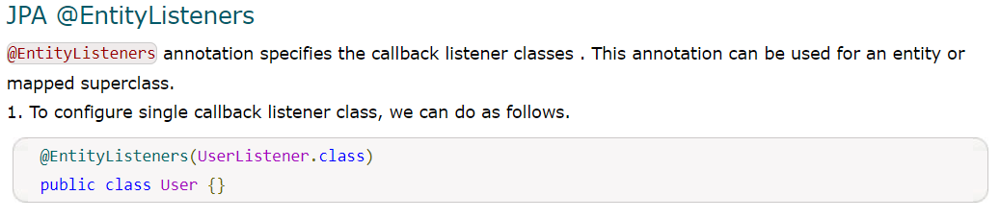
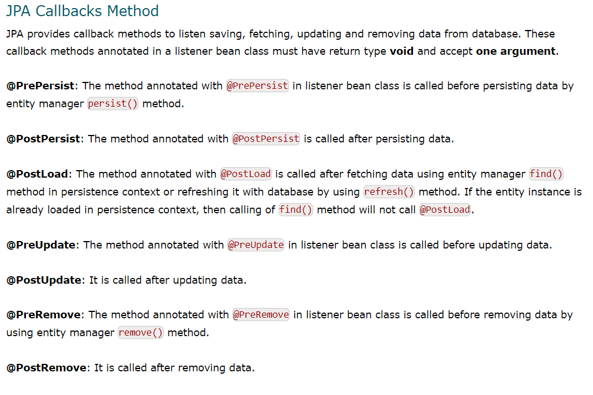
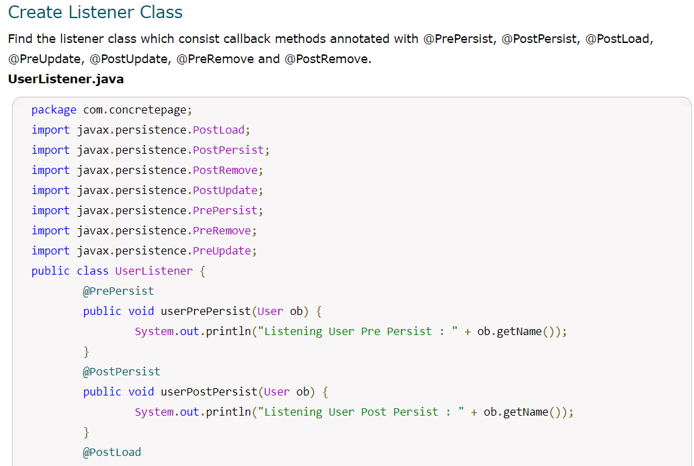
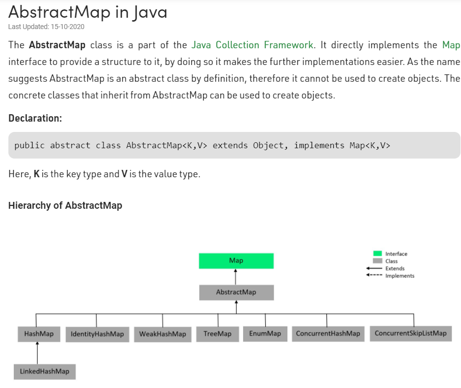
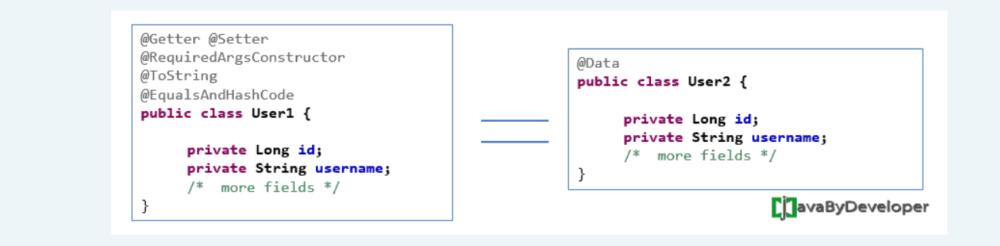
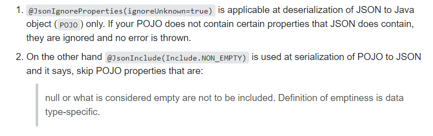
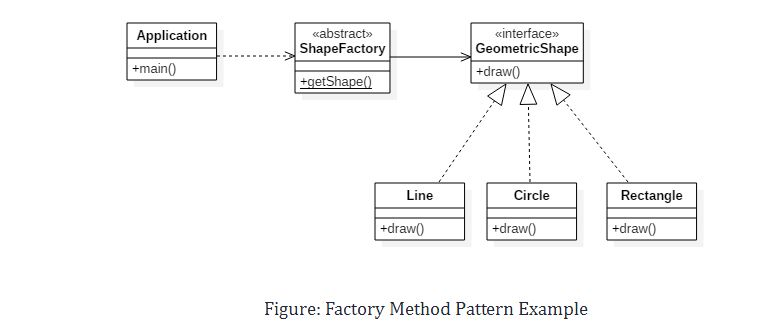

<!DOCTYPE html>
<html>
<title>Core Java</title>
<head>
	<style type="text/css">
	.redC{color:red;}
	.blueC{color:blue;}
	.aa{color:blue;}
	</style>
</head>
<body>

<div style="text-align:justify;" data-role="page">
  
<div data-role="main" class="ui-content">
<b class="redC">Question:-</b>What is addShutdownHook() in java <br/> 
	addShutdownHook() will register some actions which is to be performed on a Program's termination.<br/> 
The program that you start ends in two ways:<br/> 
1.the main thread (Root) ends its running context;<br/> 
2.the program meets some unexpected situation, so it cannot proceed further.<br/> 
If you add a ShutdownHook, the hook will start a thread that will start running at time of termination only.<br/> 
<b class="redC">For example:</b><br/>
 Runtime.getRuntime().addShutdownHook(new Thread() {<br/>
      public void run() {<br/>
        System.out.println("Running Shutdown Hook");<br/>
      }<br/>
    });<br/>
	<br/>
<b class="redC">Question:-</b> Can a constructor be synchronized?<br/>
<b class="redC">Answer:-</b> No, constructor cannot be synchronized. Because constructor is used for instantiating object, when we are in constructor object is under creation.<br/>
		 So, until object is not instantiated it does not need any synchronization.	<br/>
<br/>	
	<b class="redC">Question:-</b>Types of Memory Leaks in Java.<br/>
	<b class="redC">Answer:-</b><br/>
	1-Static Field Holding Object Reference<br/>
	2-Unclosed Resources<br/>
	3-Through finalize() Methods<br/>
	Use of finalizers is yet another source of potential memory leak issues. Whenever a class’ finalize() method is<br/>
	overridden, then objects of that class aren’t instantly garbage collected. Instead, the GC queues them for<br/>
	finalization, which occurs at a later point in time.<br/>
	<b class="redC">Question:-</b>Java Memory Leak Detection<br/>
	<b class="redC">Answer:-</b><br/>
	1-Memory Profilers like JProfiler<br/>
	Memory profilers or in general Java Virtual Machine profilers, such as Java VisualVM, YourKit,<br/>
	JProfiler, and Mission Control are applications allowing you to get a deep insight into what is happening inside the Java Virtual Machine.<br/>
	2-Heap Dumps:-<br/>
	heap dumps come in handy. The heap dump is a snapshot of the heap memory of your Java Virtual<br/>
	Machine that can be generated on demand or for example when the application crashes with the<br/>
	OutOfMemory error.<br/>
	<b class="redC">Question:-</b>What are the mainly performace issue in java application.<br/>
	<br/>
   <b class="redC">Question:-</b>What is difference between map() and flatMap().<br/>
   <br/>
	1-While evaluating an expression containing int, bytes or shorts, the whole expression is converted to int then evaluated and the result is also of type int.<br/>
	2-When casting int into byte if value of int in beyond the range of byte then  a complete range of byte will be lost means -128 to 127 including 0 that  256 Will be lost.<br/>
		For example  if I will cast 257 then result will be 1.<br/>
	3-We can only overrides methods not variables in java.<br/>
	4-If no package is specified, the classes in the file  go into a special unnamed package.<br/>
	5-Applets are embedded in another applications.<br/>
	6-A Servlet can use the user interface classes like AWT or Swing.<br/>
	7-Type IV JDBC driver is a driver - which communicates through Java sockets.<br/>
	8-Parameters are passed by value in Java.<br/>
	9-We use call-by-reference to pass objects as arguments to methods in java.<br/>
	10-TreeMap does not allow null key.<br/>
	11-Angle Bracket in Java is used to define Generics.<br/>
		It means that the angle bracket takes a generic type, say T, in the definition and any class as a parameter during the calling.<br/>
		The idea is to allow type (Integer, String, … etc and user-defined types) to be a parameter to methods, classes, and interfaces.<br/>
		For example, classes like HashSet, ArrayList, HashMap, etc use generics very well. We can use them for any type.<br/>
		<br/>
	<b class="redC">Question:-</b>What is Queue interface in Java<br/>
<b class="redC">Answer:-</b><br/>
	Being an interface queue needs a concreate class for the declaration and the most common classes are the PriorityQueue & LinkedList in java. It is to noted that implemention are not thread safe<br/> 
	PriorityBlockingQueue is one alternative implemention if the thread safe implemention is needed.<br/>  		
	<br/>
<b class="redC">Question:-</b>What is different between peek() & element().<br/>
<b class="redC">Answer:-</b><br/>
	peek()- Method is used to view the head of the queue without removing it.It returns NULL is the queue is empty.<br/>
	element()-This method is similar to peek().It throws NoSuchElementException when the queue is empty.<br/>
<br/>
<b class="redC">Question:-</b>What is difference between remove() & poll().<br/>
<b class="redC">Answer:-</b><br/>
	The remove() and poll() method only differs in their behavior when the queue is empty: the remove() method throws exception, while the poll() method returns null.<br/> 
<br/> 
<b class="redC">Question:-</b>What is PriorityBlockingQueue.<br/> 
<b class="redC">Answer:-</b><br/> 
		It is to be noted that both implemention , the PriorityQueue and LinkedList are not thread-safe.<br/> 
		if thread-safe implemention is needed PriorityBlockingQueue are used.<br/> 
		<br/> 
	<b class="redC">Note :-</b>
	 The constructor inside the abstract class can only be called during constructor chaining i.e. 
	 when we create an instance of sub-classes. This is also one of the reasons abstract class can have a constructor<br/>
    <b class="redC">Question :-</b> What is the worst case in HashMap<br/>
	<b class="redC">Answer :-</b> worst case occured when all the stored object are in the same index in the hashtable.<br/>
	<b class="redC">Question :-</b> Can I extend Throwable -->> Yes, We can<br/>
	<b class="redC">Note :-</b> When we use transient then at deserailization all the transient varrible will intialize with default value<br/>
<b class="redC">Question:-</b>Lock vs Synchronized Block<br/>
<b class="redC">Answer:-</b><br/>
	1-A synchronized block is fully contained within a method — we can have Lock API’s lock() and unlock() operation in separate methods<br/>
  	2-A synchronized block doesn’t support fairness, any thread can acquire the lock once released, no preference can be specified. We can achieve fairness within the Lock APIs by specifying the fairness property. It makes sure that the longest waiting thread is given access to the lock<br/>
  
  <b class="redC">Encapsulation vs Data Abstraction</b><br/>
	1-Encapsulation is data hiding(information hiding) while Abstraction is detail hiding(implementation hiding)<br>
	2-While encapsulation groups together data and methods that act upon the data, data abstraction deals with exposing the interface to the user and hiding the details of implementation.<br/>
	
<b class="redC">Question</b>Which is the final class in these three classes – String, StringBuffer and StringBuilder<br/>	
<b class="redC">Answer:-</b><br/>All three are final. (Interviewer will ask this type of questions to confuse you)<br/>

<b class="redC">Question</b>What is a Tree Map<br/>
<b class="redC">Answer:-</b><br/>
		Treemap class is like HashMap which stores key- value pairs . The major difference is that Treemap  sorts
		the key in ascending order.<br/>

<b class="redC">Question</b>Why do we need TreeMap when we have sortedMap<br/>
<b class="redC">Answer:-</b><br/>
	 sortedMap is a interface and TreeMap is the class implementing it .As we know one can not create objects of the interface .
	 Interface tells us which methods a sortedMap implementation should provide .TreeMap is such an implementation.<br/>

<b class="redC">Question</b>Why and when we use TreeMap<br/>
<b class="redC">Answer:-</b><br/>
		We need TreeMap  when we need key value pair data in ascending order <br/>

<b class="redC">Question</b>Which data structure you will prefer in your code : HashMap or TreeMap ?<br/>
<b class="redC">Answer:-</b><br/>
		HashMap is faster while  TreeMap is sorted .Thus we choose them according to their advantage.<br/>
		If you do not want to sort the elements but just to insert and retrieve the elements then use HashMap .<br/>
		But if you want to maintain the  order of the elements then TreeMap should be preferred because the result is alphabetically sorted .
		While iterating HashMap there is no ordering of the elements ,on the other hand , TreeMap iterates in the natural key order.<br/>

<b class="redC">Question</b>What is TreeSet<br/>
<b class="redC">Answer:-</b><br/>
		TreeSet is like HashSet which contains the unique elements only but in a sorted manner. <br/>

<b class="redC">Question</b>What does yield() method in Multithreading<br/>
<b class="redC">Answer:-</b><br/>
		Yield method temporarily pauses the currently executing thread to give a chance to
		the remaining waiting threads of the same priority to execute.
		If there is no waiting thread or all the waiting threads of low priority then the current thread will continue its execution.
			<br/>
<b class="redC">Question</b>Difference between Callable and Runnable in Java<br/>
<b class="redC">Answer:-</b><br/>
		1. Checked Exception : Callable's call() method can throw checked exception while  Runnable run() method can  not throw checked exception.<br/>
		2. Return value : Return type of Runnable run() method is void , so it can not return any value.
						  while Callable can return the Future object, which represents the life cycle of a task and provides methods to check if the task has been completed or canceled.
			<br/>
<b class="redC">Note:-</b><br/>
			What we need to take care is that static synchronized method locked on class object lock and nonstatic synchronized method locks on current object (this).
			So it’s possible that both static and nonstatic java synchronized method running in parallel.<br/>
			<br/>
<b class="redC">Java synchronized keyword is re-entrant in nature</b><br/>
		 It means if a java synchronized method calls another synchronized method which requires the same lock then the current thread which is holding lock can enter into that method without acquiring the lock.
			<br/>
<b class="redC">Note:-</b><br/>
		One more limitation of java synchronized keyword is that it can only be used to control access to a shared object within the same JVM.
		If you have more than one JVM and need to synchronize access to a shared file system or database, the Java synchronized keyword is not at all sufficient. You need to implement a kind of global lock for that.
			<br/>
<b class="redC">Question</b>What is the disadvantage of singleton design pattern<br/>
<b class="redC">Answer:-</b><br/>
		1-They violate the single responsibility principle: by virtue of the fact that they control their own creation and life cycle.<br/>
		2-They inherently cause code to be tightly coupled. This makes faking them out under test rather difficult in many cases.<br/>
		<br/>
		
<b class="redC">Note</b>Parent and Child classes having same data member in Java<br/>
<b class="redC">Answer:-</b><br/>
		<pre  class="blueC" >
				// A Java program to demonstrate that non-method
				// members are accessed according to reference
				// type (Unlike methods which are accessed according
				// to the referred object)
				
				class Parent
				{
					int value = 1000;
					Parent()
					{
						System.out.println("Parent Constructor");
					}
				}
				
				class Child extends Parent
				{
					int value = 10;
					Child()
					{
						System.out.println("Child Constructor");
					}
				}
				
				// Driver class
				class Test
				{
					public static void main(String[] args)
					{
						Child obj=new Child();
						System.out.println("Reference of Child Type :"
										+ obj.value);
										
						Parent par = obj;
						// Par holding obj will access the value
						// variable of parent class <br/>
						// Note that doing "Parent par = new Child()"
						// would produce same result
						System.out.println("Reference of Parent Type : "
										+ par.value);
					}
				}
			Output: 
				Parent Constructor
				Child Constructor
				Reference of Child Type : 10
				Reference of Parent Type : 1000	
		</pre>
<b class="redC">Explanation:-</b><br/>
	If a parent reference variable is holding the reference of the child class and we have the “value”
	variable in both the parent and child class, it will refer to the parent class “value” variable, whether it is
	holding child class object reference. The reference holding the child class object reference will not be
	able to access the members (functions or variables) of the child class. This is because the parent
	reference variable can only access fields that are in the parent class. Thus the type of reference
	variable decides which version of “value” will be called and not the type of object being instantiated. It
	is because compiler uses special run-time polymorphism mechanism only for methods. (There the
	type of object being instantiated decides which version of the method to be called).
	<br/>
	<br/>
<b class="redC">Note:-</b>Collections.frequency()<br/>

<b class="redC">Question:-</b>Difference between Volatile & AtomicInteger.<br/>
<b class="redC">Answer:-</b><br/>
	Volatile gives you the visibility means every thread will get the updated value But not atomicity
	in operation like ++ & -- because it may be the case that when a thread read the counter but before it will update & write back, in between
	some other thread can get the data and can do some modification.<br/>
	<br/>
	But We can achieve that atomicity using AtomicInteger<br/>
	 <br/>
	<b class="redC">Another Explanation</b>
	 The effect of the volatile keyword is approximately that each individual read or write operation on that variable is made atomically visible to all threads.
	 Notably, however, an operation that requires more than one read/write -- such as i++, which is equivalent to i = i + 1, which does one read and one write -- is not atomic,
	 since another thread may write to i between the read and the write.<br/>
	 The Atomic classes, like AtomicInteger and AtomicReference, provide a wider variety of operations atomically, specifically including increment for AtomicInteger.<br/>
 
 <b class="redC">Question:-</b>What is atomic operation in multithreading<br/>
	  A operation will known as atomic operation if it will run in single flow or we can say 
	  A operation is said to be atomic when it is not divisible anymore means no other thread can come in between the execution.
	  <br>
	  <b>OR</b><br/>
	  A set of actions is atomic if they all execute as a single operation<br/>
  <b class="redC">Use of AtomicInteger</b><br/>
  		AtomicInteger lets us update integers in a thread-safe way. Main use of AtomicInteger is in case where we did counter increment in multithreading
  		The java.util.concurrent.atomic package provides very useful classes that support lock-free and thread-safe programming on single variables.<br/>
  
  <b class="redC">Question:-</b>Why we cann't create object of a abstract class<br/>
   <b class="redC">Answer:-</b><br/> 
   you can't create a object of abstract class because there is an abstract method which has nothing so you can call that abstract method too.
   If we will create an object of the abstract class and calls the method having no body(as the method is pure virtual) it will give an error<br/>
  
  <b class="redC">Question:-</b>Why we need constructor in abstract class<br/>
   <b class="redC">Answer:-</b><br/>
  The constructor inside the abstract class can only be called during constructor chaining i.e.
  when we create an instance of sub-classes. This is also one of the reasons abstract class can have a constructor<br/>
 	<br/>
  Second reason is that if we don't have constructor in abstract class and 	if we want to initialize 
  the variable of the abstract class then every class need to write duplicate code for that.
  For more detail there is video in DailyWork folder<br/> 
  
  <b class="redC">TreeMap:-</b>Internal working of TreeMap<br/>
  	Like HashMap and LikedHasMap it does not use hashing for storing key-value pairs. Internally, it uses a data structure called the Red-Black Tree.
	In other words, it sorts the TreeMap object keys using the Red-Black Tree algorithm.<br/>
	<br/>
  
  <br/>
  <b class="redC">Note:</b> 
  The AtomicInteger class provides you with a int variable which can be read and written atomically<br/>
  
  <b class="redC">Question:</b>What is race condition in Thread.<br/>
  <b class="redC">Answer:</b><br/>
  In simple word incorrect result produced due to thread interleaving<br/>
  <b class="blueC">OR</b><br/>
  A race condition is a situation that may occur inside a critical section.This happen when the result of multiple thread
  execution in critical section differs according to order in which threads executed.<br/>
  
  <b class="redC">Race condition</b><br/>
  Your code will have a race condition if there’s a possibility to produce incorrect results due to thread interleaving. This section describes two types of race conditions:<br/>
  1-Check-then-act<br/>
  2-Read-modify-write<br/>
  <b class="redC">Check-then-act race condition</b><br/>
  This race condition appears when you have a shared field and expect to serially execute the following steps:<br/>
  <br/>
  1-Get a value from a field.<br/>
  2-Do something based on the result of the previous check.<br/>
  <br/>
  The problem here is that when the first thread is going to act after the previous check, another thread may have
  interleaved and changed the value of the field. Now, the first thread will act based on a value that is no longer valid.<br/>
  <br/>
  <b class="redC">Read-modify-write race condition</b><br/>
  Here we have another type of race condition which appears when executing the following set of actions:<br/>
  <br/>
  1-Fetch a value from a field.<br/>
  2-Modify the value.<br/>
  3-Store the new value to the field<br/>
  In this case, there’s another dangerous possibility which consists in the loss of some updates to the field.<br/>
  <br/> 
  <b class="redC">Question:</b>Difference between start and run in Java Thread<br/>
  <b class="redC">Answer:</b><br/>
  Main difference is that,<br/> when program calls start() method new Thread is created and code inside the run method is
  executed in new Thread, <br/>while if you call run() method directly no new thread is created and code inside run() method execute
  on current Thread.<br/>
  <br/>
  <b class="redC">Question:</b>What problem Builder pattern solves in Java<br/>
  <b class="redC">Answer:</b><br/>
  Builder pattern is a creational design pattern it means its solves problem related to object creation.
  Constructors in Java are used to create object and can take parameters required to create object.
  Problem starts when an Object can be created with lot of parameters, some of them may be mandatory and others may be optional. 
  <br/><br/>
  Consider a class which is used to create Cake, now you need number of item like egg, milk, flour to create cake.
  many of them are mandatory and some  of them are optional like cherry, fruits etc.
  If we are going to have overloaded constructor for different kind of cake then there will be many constructor and even worst they will accept many parameter.
  <br/>
  <br/>
  Builder design pattern not only improves readability but also reduces chance of error by adding ingredients explicitly and making object available once fully constructed. 
  <br/>
  <b class="redC">Example of Builder Design pattern in Java:-</b><br/><br/>
  We are considering the example of creating a cake using builder design pattern Guideline for builder design pattern in java<br/>
	1-Make a static nested class called Builder inside the class whose object will be build by Builder.In this example its Cake<br/>
	2-Builder class will have exactly same set of fields as original class.<br/>
	3-Builder class will expose method for adding properties.Each method will return same Builder object.Builder will enriched with each method call.<br/>
	4-Builder.build() method will copy all builder field values into actual class and return object of the class.<br/>
	5-Class for which we are creating builder should have private constructor to create its object from build() method and prevent outsider to access its constructor.<br/>
	<br/>
	<b class="redC">Example:-</b><br/>
    <pre class="blueC">
    public class BuilderPatternExample {
 
    public static void main(String args[]) {
     
        //Creating object using Builder pattern in java
        Cake whiteCake = new Cake.Builder().sugar(1).butter(0.5).  eggs(2).vanila(2).flour(1.5). bakingpowder(0.75).milk(0.5).build();
     
        //Cake is ready to eat :)
        System.out.println(whiteCake);
    }
}

class Cake {

    private final double sugar;   //cup
    private final double butter;  //cup
    private final int eggs;
    private final int vanila;     //spoon
    private final double flour;   //cup
    private final double bakingpowder; //spoon
    private final double milk;  //cup
    private final int cherry;

    public static class Builder {

        private double sugar;   //cup
        private double butter;  //cup
        private int eggs;
        private int vanila;     //spoon
        private double flour;   //cup
        private double bakingpowder; //spoon
        private double milk;  //cup
        private int cherry;

        //builder methods for setting property
        public Builder sugar(double cup){this.sugar = cup; return this; }
        public Builder butter(double cup){this.butter = cup; return this; }
        public Builder eggs(int number){this.eggs = number; return this; }
        public Builder vanila(int spoon){this.vanila = spoon; return this; }
        public Builder flour(double cup){this.flour = cup; return this; }
        public Builder bakingpowder(double spoon){this.sugar = spoon; return this; }
        public Builder milk(double cup){this.milk = cup; return this; }
        public Builder cherry(int number){this.cherry = number; return this; }
     
     
        //return fully build object
        public Cake build() {
            return new Cake(this);
        }
    }

    //private constructor to enforce object creation through builder
    private Cake(Builder builder) {
        this.sugar = builder.sugar;
        this.butter = builder.butter;
        this.eggs = builder.eggs;
        this.vanila = builder.vanila;
        this.flour = builder.flour;
        this.bakingpowder = builder.bakingpowder;
        this.milk = builder.milk;
        this.cherry = builder.cherry;      
    }

    @Override
    public String toString() {
        return "Cake{" + "sugar=" + sugar + ", butter=" + butter + ", eggs=" + eggs + ", vanila=" + vanila + ", flour=" + flour + ", bakingpowder=" + bakingpowder + ", milk=" + milk + ", cherry=" + cherry + '}';

    }
 
}

<b class="redC">Output:</b>
Cake{sugar=0.75, butter=0.5, eggs=2, vanila=2, flour=1.5, bakingpowder=0.0, milk=0.5, cherry=0}

    </pre>
  <b class="redC">Question:</b>What is Java Stream map()<br/>
  <b class="redC">Answer:</b><br/>
  Java 8 Stream.map() converts Stream<X> to Stream<Y>. For each object of type X, a new object of type Y is created and put in the new Stream.
  Or It simply used to convert Stream of one type to another<br/>
  <br/>
   <b class="redC">Question:</b>What is difference between findAny() & findFirst()<br/>
   <br/>
   
   <b class="redC">Question:</b>Difference Between map() and flatmap()<br/><br/>
   <br/>
    
   <b class="redC">Question:</b>What is Double colon (::) operator in Java<br/>
   <br/>
   <br/>
   
   <b class="redC">Question:</b>What is Atomic Integer<br/>
   The AtomicInteger class provides you with a int variable which can be read and written atomically.
   <br/>
   The creation of AtomicInteger is straight forward by calling a constructor. The AtomicInteger
   provides two methods to get and set the values of it’s instances.
   <br/>
   <b class="redC">When to use atomic Integer in Java</b><br/>
   In real life uses, we will need AtomicInteger in two cases:<br/>
   <b class="redC">1-</b>As an atomic counter which is being used by multiple threads concurrently.<br/>
   <b class="redC">2-</b>In compare-and-swap operations to implement non-blocking algorithms.<br/>
   <b class="redC">OR</b><br/>
   when we need to perform atomic operations on an int value without using synchronized keyword.
   <br/>
	<b class="redC">Question:</b>What is Spock FrameWork<br/>
	<a target="_blank" href="https://www.youtube.com/watch?v=6uKU_KyAqvA&list=PLCYqwbyDA33Qe2Rr5rihx3ETvpgn7_39x&index=2"><font class="redC">Read more...</font></a> <br/>
	<font class="blueC">https://www.youtube.com/watch?v=6uKU_KyAqvA&list=PLCYqwbyDA33Qe2Rr5rihx3ETvpgn7_39x&index=2</font><br/>
	
	<b class="redC">Question:</b>How JUnit works<br/>
	<a target="_blank" href="https://www.youtube.com/watch?v=RA619syDTps&list=PLqq-6Pq4lTTa4ad5JISViSb2FVG8Vwa4o&index=15"><font class="redC">Read more...</font></a> <br/>
	<font class="blueC">https://www.youtube.com/watch?v=RA619syDTps&list=PLqq-6Pq4lTTa4ad5JISViSb2FVG8Vwa4o&index=15</font><br/>
	
	<b class="redC">Question:</b>@EntityListener<br/>
	<br/>
	Then<br/>
	<br/>
	Then<br/>
	<br/>
	<br/>
	  <b class="redC">Question:-</b>What is ConcurrentSkipListMap<br/>
	  <b class="redC">Answer:-</b><br/>
	  ConcurrentSkipListMap is an implementation of ConcurrentNavigableMap provided in the JDK since 1.6. The elements
	  are sorted based on their natural sorting order of keys. The order can be customized using a Comparator provided during the time of initialization.<br/>
	  <a target="_blank" href="https://javapapers.com/java/java-concurrentskiplistmap/"><font class="redC">Read more...</font></a> <br/>
	  <font class="blueC">https://javapapers.com/java/java-concurrentskiplistmap/</font><br/>
	  <a target="_blank" href="https://www.baeldung.com/java-concurrent-skip-list-map"><font class="redC">Read more...</font></a> <br/>
	  <font class="blueC">https://www.baeldung.com/java-concurrent-skip-list-map</font><br/>
	  <br/>

	  <b class="redC">Question:-</b>What is XPath<br/>
	  <b class="redC">Answer:-</b><br/>
	  XPath is a syntax used to describe parts of an XML document. With XPath, you can refer to the first
	  element, any attribute of the elements, all specific elements that contain the some text, and many other
	  variations. An XSLT style-sheet uses XPath expressions in the match and select attributes of various
	  elements to indicate how a document should be transformed.<br/>
	  <a target="_blank" href="https://howtodoinjava.com/java/xml/java-xpath-tutorial-example/"><font class="redC">Read more...</font></a> <br/>
	  <font class="blueC">https://howtodoinjava.com/java/xml/java-xpath-tutorial-example/</font><br/>
	  <br/>

	  <b class="redC">Question:-</b>Inflater inflate() function in Java<br/>
	  <b class="redC">Answer:-</b><br/>
	  The inflate() function of the Inflater class is used to uncompress the input data and fill the given buffer
	  with the uncompressed data. The function returns the number of bytes of the uncompressed data.<br/>
	  <a target="_blank" href="https://www.geeksforgeeks.org/inflater-inflate-function-in-java-with-examples/"><font class="redC">Read more...</font></a> <br/>
	  <font class="blueC">https://www.geeksforgeeks.org/inflater-inflate-function-in-java-with-examples/</font><br/>
		<br/>
	  <b class="redC">Question:-</b>What is AbstractMap in Java<br/>
	  <b class="redC">Answer:-</b><br/>
	  <br/>

	  <b class="redC">Question:-</b>What is Java Optioanl Class<br/>
	  <b class="redC">Answer:-</b><br/>
	  Java introduced a new class Optional in jdk8. It is a public final class and used to deal with NullPointerException in Java application. You must import
	  java.util package to use this class. It provides methods which are used to check the presence of value for particular variable.
	  <a target="_blank" href="https://www.javatpoint.com/java-8-optional"><font class="redC">Read more...</font></a> <br/>
	  <font class="blueC">https://www.javatpoint.com/java-8-optional</font><br/>

	  <b class="redC">Question:-</b>What is @Builder annotation in Lombok<br/>
	  <b class="redC">Answer:-</b><br/>
	  Lombok @Builder annotation produces the code automatically using Builder pattern. We can apply this annotation at class level, constructor level and
	  method level. Builder pattern is a commonly used creational design pattern in application development which solves the instance creation problems with
	  Factory and Abstract Factory design patterns.<br/>
	  <a target="_blank" href="http://www.javabyexamples.com/delombok-builder"><font class="redC">Read more...</font></a> <br/>
	  <font class="blueC">http://www.javabyexamples.com/delombok-builder</font><br/>

<b class="redC">Note:-</b>LOB or Large OBject refers to a variable length datatype for storing large objects. ... CLOB<br/>
<b class="redC">Question:-</b>What is use of @Data in Lombok.<br/>
	  <br/>
	  <b class="redC">Question:-</b>What is use of @JsonIgnoreProperties(ignoreUnknown=true) in Lombok.<br/>
	  <br/>
Java program that explains the internal implementation of BlockingQueue<br/>
  <pre class="aa">
  // Java program that explains the internal 
// implementation of BlockingQueue 

import java.io.*; 
import java.util.*; 

class BlockingQueue<E> { 

	// BlockingQueue using LinkedList structure 
	// with a constraint on capacity 
	private List<E> queue = new LinkedList<E>(); 

	// limit variable to define capacity 
	private int limit = 10; 

	// constructor of BlockingQueue 
	public BlockingQueue(int limit) { this.limit = limit; } 

	// enqueue method that throws Exception 
	// when you try to insert after the limit 
	public synchronized void enqueue(E item) 
		throws InterruptedException 
	{ 
		while (this.queue.size() == this.limit) { 
			wait(); 
		} 
		if (this.queue.size() == 0) { 
			notifyAll(); 
		} 
		this.queue.add(item); 
	} 

	// dequeue methods that throws Exception 
	// when you try to remove element from an 
	// empty queue 
	public synchronized E dequeue() 
		throws InterruptedException 
	{ 
		while (this.queue.size() == 0) { 
			wait(); 
		} 
		if (this.queue.size() == this.limit) { 
			notifyAll(); 
		} 

		return this.queue.remove(0); 
	} 
	
	public static void main(String []args) 
	{ 
	} 
}

  </pre>
  
  <a href="https://www.journaldev.com/1034/java-blockingqueue-example">BlockingQueue Example1</a><br/>
  <a href="http://tutorials.jenkov.com/java-util-concurrent/blockingqueue.html">BlockingQueue Example2</a><br/>
  <a href="https://www.geeksforgeeks.org/blockingqueue-interface-in-java/">BlockingQueue Example3</a><br/>
  <br/>
  <b class="redC">Question:-</b>What is Externalizable in java<br/>
  <b class="redC">Answer:-</b>
  The default java serialization is not efficient. It you serialize a bloated objected having lots of attributes and
	properties, you do not wish to serialize for any reason (e.g. they always been assigned default values), you get
	heavy object to process and send more bytes over network which may be costly on some cases.<br/>
	<br/>
	To solve this issue, you can write your own serialization logic by implementing Externalizable interface and
	overriding it’s methods writeExternal() and readExternal(). By implementing these methods, you are telling
	the JVM how to encode/decode your object.<br/> 	
	<br/><br/>
	using this we are able to fetch back desired fields while ignoring the unwanted fields and that’s whole purpose of Externalizable interface.
  <br/>
  
  <b class="redC">Question:-</b>How can we synchronize a collection OR how to make a collection thread-safe?<br/>
  <b class="redC">Answer:-</b>
  Collections class has several static methods that return synchronized collections. Each of the six core collection interfaces -Collection, Set, List, Map, SortedSet, and SortedMap - has one static factory method.<br/>
  <br/>
  <pre class="aa">
  	public static <T> Collection<T> synchronizedCollection(Collection<T> c);
	public static <T> Set<T> synchronizedSet(Set<T> s);
	public static <T> List<T> synchronizedList(List<T> list);
	public static <K,V> Map<K,V> synchronizedMap(Map<K,V> m);
	public static <T> SortedSet<T> synchronizedSortedSet(SortedSet<T> s);
	public static <K,V> SortedMap<K,V> synchronizedSortedMap(SortedMap<K,V> m);
  </pre>
  Each of these methods returns a synchronized (thread-safe) Collection backed up by the specified collection.<br/>
  <br/>
  
  
  <b class="redC">Question:-</b>How to make a Collection Class immutable?<br/>
  <b class="redC">Answer:-</b>
  	Collections class provides static method to make a Collection unmodifiable. Each of the six core collection interfaces -Collection, Set, List, Map, SortedSet, and SortedMap - has one static factory method.<br/>
  	<br/>
  	<pre class="aa">
  	
  	public static &lt;T&gt; Collection&lt;T&gt; unmodifiableCollection(Collection&lt;? extends T&gt; c);
	public static &lt;T&gt; Set&lt;T&gt; unmodifiableSet(Set&lt;? extends T&gt; s);
	public static &lt;T&gt; List&lt;T&gt; unmodifiableList(List&lt;? extends T&gt; list);
	public static &lt;K,V&gt; Map&lt;K, V&gt; unmodifiableMap(Map&lt;? extends K, ? extends V&gt; m);
	public static &lt;T&gt; SortedSet&lt;T&gt; unmodifiableSortedSet(SortedSet&lt;? extends T&gt; s);
	public static &lt;K,V&gt; SortedMap&lt;K, V&gt; unmodifiableSortedMap(SortedMap&lt;K, ? extends V&gt; m);

  	</pre>

  
  <b class="redC">Question:-</b>How to remove duplicate from ArrayList using Stream API<br/>
  <b class="redC">Answer:-</b><br/>
  <pre class="aa">
  	cityList = cityList.stream().distinct().collect(Collectors.toList());
  </pre>
  
  
  
  <b class="redC">Question:-</b>What is the Difference between ArrayList and CopyOnWriteArrayList in Java?<br/>
  <b class="redC">Answer:-</b>
  ArrayList is not thread-safe whereas CopyOnWriteArrayList is thread-safe and fit for use in multi-threaded environment.<br/>
  <br/>
  Iterator returned by ArrayList is fail-fast. Iterator returned by CopyOnWriteArrayList is fail-safe.<br/>
  <br/>
  Performance wise ArrayList is faster as it is not synchronized and there is no added burden of thread-safety. CopyOnWriteArrayList is comparatively slower and if there are lots of writes by various threads that will degrade the performance of the CopyOnwriteArrayList as there will be copies made per mutation.<br/>
  <br/>
  
  <b class="redC">Question:-</b>What is Shallow copy?<br/>
  <b class="redC">Answer:-</b> 
  	If the class whose object you want to clone has reference to other class objects then those reference are shared.
	When you clone an object all the values for the fields are copied to the cloned object.<br/><font class="redC">Since Java is pass by value</font>,
 	if the field value is a reference to an object (a memory address) it copies that reference to the field of the cloned
 	object. In that case referenced field is shared between both objects and any change made to the referenced field will be reflected in the other object too.
  	<br/><br/>
  	This process of cloning when the field values are copied to the new object is known as shallow copy.
  	<br/><br/>
  	
  	
  <b class="redC">Question:-</b>What is deep copy?<br/>
  <b class="redC">Answer:-</b> 
  	If you don’t want references of object being copied during the cloning process then option is deep copy.
   	When a deep copy is done objects referenced by the cloned object are distinct from those referenced by original object, and independent.<br/>
   	<br/>
   	Deep copies are more expensive, as you need to create additional objects, and can be substantially more complicated, due to references possibly forming a complicated graph.
   	<br/>
   	<br/>
   	
   	
  <b class="redC">Question:-</b>What if a list is declared as final, is it possible to add or remove values from that list?<br/>
  <b class="redC">Answer:-</b> 
  	When an object reference variable is declared as final, object fields can still be changed but the reference can't be changed.<br/>
  	So yes it is possible to add or remove values from the list even if the list is declared as final.<br/>
  	<br/>
  	<b class="redC">What is JVM:-</b><br/>
  	It is a specification in which bytecode can be executed <br/>
  
  	<b class="redC">What is JRE:-</b><br/>
  	It is implementation of JVM.It contains set of libraries + other files that JVM uses at runtime.<br/>
  	<br/>
  
  	<b class="redC">What is JDK:-</b><br/>
  	The Java Development Kit (JDK) is a software development environment which is used to develop Java applications<br/>
  	<br/>
  </div>
  
  <div data-role="main" class="ui-content">
  	<b class="redC">What is java collection hierarchy</b><br/>
  	<br/>
  </div>
  
  <div data-role="main" class="ui-content">
  	<b class="redC">Question:-</b>What is difference between Entry class & Node class<br/>
  	<b class="redC">Answer:-</b><br/>
  	1-HashMap internally uses Node<K, V> array.<br/>
  	2-Hashtable internally uses Map.Entry<K, V> array.<br/>	
  </div>
  
  <div data-role="main" class="ui-content">
   <b class="redC">Enum:-</b>An enum is a special data type that is used to define a variable which contains a collection of constants<br/>
	  <b class="redC">Java 8 feature</b><br/>
	  <b class="redC">(1)-Lambda Expression:-</b><br/>
	  lambda expressions are nameless functions given as constant values, 
	  and written exactly in the place where it’s needed,  
	  typically as a parameter to some other function.<br/> 
	  <b class="redC">in other words</b><br/>
	  Lanbda Expression are used for the implementation of the functional interface 
	  So,it is clear that lambda is some kind of function without name and identifiers.Well, what’s big deal? Why everyone is so excited<br/>
	  <br/> 
	  The answer lies in the benefits involved in functional programming over object oriented programming (OOP). Most OOP languages evolve around objects and instances and treat only 
	  them their first class citizens. Another important entity i.e. functions take back seat. This is specially true in java, where functions can’t exist outside an object. A function itself does not 
	  mean anything in java, until it is related to some object or instance.But in functional programming, you can define functions, give them reference variables and pass 
	  them as method arguments and much more. JavaScript is a good example of this where you can pass callback methods e.g. to Ajax calls. It’s very useful feature and has been lacking in java from 
	  beginning. Now with java 8, we can also use these lambda expressions.<br/>
	  
	  <b class="redC">Syntax:-</b><br/>
	  <pre class="aa">
	  (parameters) -> expression  
	   or 
	  (parameters) -> { statements; } 
	   or 
	  () -> expression 
	  </pre>
	  <b class="redC">Example:-</b><br/>
	  <b class="redC">1- </b>(int a, int b) ->    a * b               // takes two integers and returns their multiplication<br/> 
	  <b class="redC">2- </b>(a, b)          ->   a - b               // takes two numbers and returns their difference<br/> 
	  <b class="redC">3- </b>() -> 99                                // takes no values and returns 99<br/> 
	  <b class="redC">4- </b>(String a) -> System.out.println(a)     // takes a string, prints its value to the console, and returns nothing <br/> 
	  <b class="redC">5- </b>a -> 2 * a                               // takes a number and returns the result of doubling it<br/> 
	  <b class="redC">6- </b>c -> { //some complex statements }    // takes a collection and do some procesing<br/> 
	  
	  <b class="redC">Lambda expression examples:-</b><br/>
	  
	  <font class="redC">1) Iterating over a List and perform some operations</font><br/>
	  <pre class="aa">
			List<String> pointList = new ArrayList();
			pointList.add("1");
			pointList.add("2");
		 
			pointList.forEach(p ->  {
		                            System.out.println(p);
		                            //Do more work
		                        }
		                 );
	  </pre>
	   <font class="redC">2) Create a new runnable and pass it to thread</font><br/>
	  <pre class="aa">
			new Thread(
		    () -> System.out.println("My Runnable"); 
			).start();
	   </pre>
  </div>
  
  <div data-role="main" class="ui-content">
 
    <b class="redC">(2)-Functional interface</b><br/>
	Functional interfaces are also called Single Abstract Method interfaces (SAM Interfaces). As name 
	suggest, they permit exactly one abstract method inside them. Java 8 introduces an annotation 
	i.e. @FunctionalInterface which can be used for compiler level errors when the interface you 
	have annotated violates the contracts of Functional Interface.<br/> 
	
	<font class="redC">A typical functional interface example:</font><br/>
	<pre class="aa">
	@FunctionalInterface
	public interface MyFirstFunctionalInterface {
		public void firstWork();
	}
	</pre>
	
	Please note that a functional interface is valid even if the @FunctionalInterface annotation 
	would be omitted. It is only for informing the compiler to enforce single abstract method inside interface.
	Also, since default methods are not abstract you’re free to add default methods to your 
	functional interface as many as you like. 
	Another important point to remember is that if an interface declares an abstract method 
	overriding one of the public methods of java.lang.Object, that also does not count toward the 
	interface’s abstract method count since any implementation of the interface will have an 
	implementation from java.lang.Object or elsewhere. for example, below is perfectly valid 
	functional interface.<br/> 
	
	<pre class="aa">
	@FunctionalInterface
	public interface MyFirstFunctionalInterface 
	{
		public void firstWork();
	 
		@Override
		public String toString();                //Overridden from Object class
	 
		@Override
		public boolean equals(Object obj);        //Overridden from Object class
	}
	</pre> 
	
	<b class="redC">(3)-Default methods in java 8</b><br/> 
	
	Default methods in java 8 are simply default. If you do not override them, they<br/>
	are the methods which will be invoked by caller classes. They are defined in interfaces.<br/>
	<font class="redC">Let’s understand with an example:</font><br/>
	
	<pre class="aa">
	public interface Moveable {
		default void move(){
			System.out.println("I am moving");
		}
	}
	</pre>
	
	<font class="redC">Best part comes as following benefits:</font><br/>
	<b class="redC">&#07;</b>Static default methods: You can define static default methods in interface which will be available to all instances of class which implement this interface. This makes it easier for 
	you to organize helper methods in your libraries; you can keep static methods specific to an interface in the same interface rather than in a separate class. This enables you to define methods out of your class and yet share with all child classes. <br/> 
	
	<b class="redC">&#07;</b>methods out of your class and yet share with all child classes. without even touching their code. Simply add a default method in interface which they all implement.<br/><br/>
	
	<b class="redC">Why default methods were needed in java 8</b><br/>
	This is a good candidate for your next interview question. Simplest answer is to enable the functionality of lambda expression in java. Lambda expression are essentially of type of 
	functional interface. To support lambda expressions seamlessly, all core classes have to be modified. But these core classes like java.util.List are implemented not only in JDK classes, but 
	also in thousands of client code as well. Any incompatible change in core classes will back fire for sure and will not be accepted at all.<br/><br/>
	Default methods break this deadlock and allow adding support for functional interface in core classes. Let’s see an example. Below is a method which has been added to java.lang.Iterable.<br/>
	
	<pre class="aa">  
	default void forEach(Consumer&lt;? super T> action) {
    Objects.requireNonNull(action);
		for (T t : this) {
			action.accept(t);
		}
	}
	</pre>
	
	<b class="redC">How conflicts are resolved while calling default methods</b><br/>
	<font class="redC">Rules for this conflict resolution are as follows:</font><br/>
	<font class="redC">1)</font> Most preferred are the overridden methods in classes. They will be matched and called if found before matching anything.<br/>
	<br/>
	<font class="redC">2)</font> The method with the same signature in the “most specific default-providing interface” is selected. This means if class Animal implements two interfaces i.e. Moveable and Walkable such 
		that Walkable extends Moveable. Then Walkable is here most specific interface and default method will be chosen from here if method signature is matched.<br/>
	<br/>	
	<font class="redC">3)</font> If Moveable and Walkable are independent interfaces then a serious conflict condition happen, and compiler will complain then it is unable to decide. Then implemating class need to override the
		default method explicitly and then call the interface method using super <br/> 
	<br/>	
		<font class="redC">Example</font><br/>
		
		<pre class="aa">
		public interface Test
		{
			default int play()
			{
				return 1;
			}
		}
		public interface TestTwo  
		{
			default int play()
			{
				return 2;
			}
		}
		public class  ExampleOne implements Test,TestTwo{

			public int play() // <b>first need to override which is the solution which is must</b>
			{
				return Test.super.play(); // <b>then you call the method using super.</b>
			}
			 
		}
		</pre>
		
	<b class="redC">(4)-Streams</b><br/>
	Java provides a new additional package in Java 8 called java.util.stream.This package consists of classes, interfaces and enum to 
	allows functional-style operations on the elements.You can use stream by importing java.util.stream package. 
	You can use stream to filter, collect, print, and convert from one data structure to other etc.<br/>
	
	<b class="redC">(5)-New Date-Time API</b><br/>
	New date-time API is introduced in Java 8 to overcome the following drawbacks of old date-time API :<br/>
	1-<font class="redC">Not thread safe : </font>Unlike old java.util.Date which is not thread safe the new date-time API is immutable and doesn’t have setter methods.<br/>
	2-<font class="redC">Less operations : </font>In old API there are only few date operations but the new API provides us with many date operations.<br/>
	<br/>
	<font class="redC">Java 8 under the package java.time introduced a new date-time API, most important classes among them are :</font><br/>
	1-<font class="redC">Local :</font> Simplified date-time API with no complexity of timezone handling.<br/>
	2-<font class="redC">Zoned :</font>Specialized date-time API to deal with various timezones.<br/>
	
	</div>
	<br/>
	
  <div data-role="main" class="ui-content">
  
  <b class="redC">ThreadLocal</b><br/>
  The ThreadLocal class in Java enables you to create variables that can only be read and written by the same thread. Thus, even if two threads are executing the same code, and the code has a reference to a 
  ThreadLocal variable, then the two threads cannot see each other's ThreadLocal variables.<br/>
  <br/>
  
  <b class="redC">Creating a ThreadLocal</b><br/>
  <pre class="aa">private ThreadLocal myThreadLocal = new ThreadLocal();</pre>
  
  <b class="redC">Accessing a ThreadLocal</b><br/>
  <font>Once a ThreadLocal has been created you can set the value to be stored in it like this:</font><br/> 
  <pre class="aa">myThreadLocal.set("A thread local value");</pre>
  
  <font>You read the value stored in a ThreadLocal like this:</font><br/> 
  <pre class="aa">String threadLocalValue = (String) myThreadLocal.get();</pre>
  
  <font class="redC">Full ThreadLocal Example</font><br/>
  
  <pre class="aa">
  public class ThreadLocalExample {

    public static class MyRunnable implements Runnable {
        private ThreadLocal&lt;Integer&gt; threadLocal =
               new ThreadLocal&lt;Integer&gt;();
        @Override
        public void run() {
            threadLocal.set( (int) (Math.random() * 100D) );
            try {
                Thread.sleep(2000);
            } catch (InterruptedException e) {
            }
    
            System.out.println(threadLocal.get());
        }
    }
    public static void main(String[] args) {
        MyRunnable sharedRunnableInstance = new MyRunnable();
        Thread thread1 = new Thread(sharedRunnableInstance);
        Thread thread2 = new Thread(sharedRunnableInstance);
        thread1.start();
        thread2.start();
        thread1.join(); //wait for thread 1 to terminate
        thread2.join(); //wait for thread 2 to terminate
    }
}
  </pre>
  
 <b class="redC">Java Custom Exception</b><br/>
 If you are creating your own Exception that is known as custom exception or user-defined exception.Java custom exceptions are used to customize the exception according to user need. 
 By the help of custom exception, you can have your own exception and message.<br/>
 <font class="redC">Let's see a simple example of java custom exception</font><br/> 
 <pre class="aa">
 class InvalidAgeException extends Exception{  
	 InvalidAgeException(String s){  
	  super(s);  
	 }  
 }
 
     class TestCustomException1{  
      
       static void validate(int age)throws InvalidAgeException{  
         if(age&lt;18)  
          throw new InvalidAgeException("not valid");  
         else  
          System.out.println("welcome to vote");  
       }  
         
       public static void main(String args[]){  
          try{  
          validate(13);  
          }catch(Exception m){System.out.println("Exception occured: "+m);}  
      
          System.out.println("rest of the code...");  
      }  
    }  
 </pre>
 
<b class="redC">Question:-</b>How to covert set in arrayList and vice-versa <br/>
<font class="redC">Answer:-</font>Simply by passing arrayList in set constructor and vice-versa<br/>
<br/>

<b class="redC">Question:-</b>How to covert LinkedList in arrayList and vice-versa<br/> 
<font class="redC">Answer:-</font>Simply by passing arrayList in LinkedList constructor and vice-versa<br/>
<br/>

<b class="redC">Note:-</b><br/>

Java String intern() method is used for getting the string from the memory if it is already present.This method ensures that all the same strings share the same memory.<br/>
	<pre class="aa">
	public static void main(String s[])
	{
		String a="shashi";
		String b=new String("shashi").intern();
		if(a==b)
		{
			System.out.println("True"); //This will be output.
		}else
		{
			System.out.println("False");
		}
	}
	</pre>
	
  <b class="redC">Question:-</b>What is the difference between preemptive scheduling and time slicing<br/>
  
  <b class="redC">Question:-</b>Can we override static method in java <br/>
  <b class="redC">Answer:-</b>
    <font class="redC">Preemptive scheduling:</font>
    The highest priority task executes until it enters the waiting or dead states or a higher priority task comes into existence.<br/>
	
    <font class="redC">Time slicing:</font> 
    A task executes for a predefined slice of time and then reenters the pool of ready tasks. The scheduler then determines which task should execute<br/>
    next, based on priority and other factors.<br/>
    <br/>
    
  <b class="redC">Question:-</b>When collection introduce in java means in which version<br/> 
  Answer:-Jdk 1.2 <br/>
  <b class="redC">Answer:-</b><b>No, you can not override static method in Java</b><br/>
  <b class="redC">Question:-</b>What is static and dynamic binding in java<br/>
  <b class="redC">Answer:-</b>Static Binding: The binding which can be resolved at compile time by compiler is known
  as static or early binding. Binding of all the static, private and final methods is done at compile-time.
  <b>Why binding of static, final and private methods is always a static binding?</b>
  Static binding is better performance wise (no extra overhead is required). Compiler knows
  that all such methods cannot be overridden and will always be accessed by object of local
  class. Hence compiler doesn’t have any difficulty to determine object of class. 
  That’s the reason binding for such methods is static.<br/>
  <b>Dynamic Binding:</b>In Dynamic binding compiler doesn’t decide the method to be called. 
  Overriding is a perfect example of dynamic binding. In overriding both parent and child<br/>
  classes have same method<br/>
  <b class="redC">Question:-</b>What is diamond problem in java<br/>
  <a href="https://dzone.com/articles/dealing-with-diamond-problem-in-java">Daimond problem and solution</a><br/>
  <b class="redC">Question:-</b>What is try with resource in java<br/>
  <b class="redC">Question:-</b>Explain the exception heirarchy in java with Example<br/>
  <b class="redC">Serialization and Deserialization in Java</b><br/>
  Serialization is a mechanism of converting the state of an object into a byte stream.<br/>
  Deserialization is the reverse process where the byte stream is used to recreate the actual Java object in memory.<br/>
  <b class="redC">To make a Java object serializable we implement the java.io.Serializable interface.</b><br/>
  <pre>
  The ObjectOutputStream class contains writeObject() method for serializing an Object.
  public final void writeObject(Object obj)
                       throws IOException
  The ObjectInputStream class contains readObject() method for deserializing an object.
  public final Object readObject()
                  throws IOException,
               ClassNotFoundException                       
  </pre>
  <b class="redC">
  Advantages of Serialization:-
  </b><br/>
  1. To save/persist state of an object.<br/>
  2. To travel an object across a network.<br/>
  <b class="redC">Only the objects of those classes can be serialized which are implementing java.io.Serializable interface.</b><br/>
  <pre>
  Serializable is a <b class="redC">marker interface</b> (has no data member and method). 
  It is used to “mark” java classes so that objects of these classes may get certain capability.
   Other examples of marker interfaces are:- <b class="redC">Cloneable and Remote.</b>
  </pre>
  <b class="redC">
  Points to remember:-
  </b><br/>
  <b class="redC">1.</b> If a parent class has implemented Serializable interface then child class doesn’t need to implement it but vice-versa is not true.<br/>
  <b class="redC">2.</b> Only non-static data members are saved via Serialization process.<br/>
  <b class="redC">3.</b> Static data members and transient data members are not saved via Serialization
  	process.So, if you don’t want to save value of a non-static data member then make it transient.<br/>
  <b class="redC">4.</b> Constructor of object is never called when an object is deserialized.<br/>
  <b class="redC"> 5.</b> Associated objects must be implementing Serializable interface.<br/>
  <b class="redC">SerialVersionUID:-</b><br/>
  The Serialization runtime associates a version number with each Serializable class called a SerialVersionUID 
  and will ckeck at reciever end if it will not match with sender then it will throw an exception InvalidClassException. 
  We can also declare our own SerialVersionUID in the Serializable class.
  To do so, you need to create a field SerialVersionUID and assign a value to it.<br/>
  <b>
  It must be static, final and of type long.<br/>
  i.e- ANY-ACCESS-MODIFIER static final long serialVersionUID=42L;<br/>
  It is also recommended to use private modifier for UID since it is not useful as inherited member<br/>
  </b>
  <b class="redC"></b><br/>
  If a serializable class doesn’t explicitly declare a serialVersionUID, then the serialization runtime will calculate a default one for that class based on various aspects of class<br/>
  <b class="redC">However it is strongly recommended that all serializable classes explicitly declare serialVersionUID value</b><br/><br/>
  <b class="redC">
  What is serialver:-
  </b>
  The serialver is a tool that comes with JDK. It is used to get serialVersionUID number for Java classes.
  </div>
 <div data-role="main" class="ui-content">
 <b class="redC">Marker interface in Java</b><br/>
 	It is an empty interface (no field or methods). Examples of marker interface are <b class="redC">Serializable, Clonnable and Remote </b>interface.<br/>
 	<b class="redC">Cloneable interface:-</b>
  	A class that implements the Cloneable interface indicates that it is legal for clone() method to make a field-for-field copy of instances of that class.<br/>
  	Invoking Object’s clone method on an instance of the class that does not implement the Cloneable interface results in an exception <b class="redC">CloneNotSupportedException</b> being thrown.<br/>
  	<b class="redC">Transient:-</b>
  	is a Java keyword which marks a member variable not to be serialized when it is persisted to streams of bytes. When an object is transferred through the network
 </div>
 <div data-role="main" class="ui-content">
 <b class="redC">Object class in Java</b><br/>
 There are methods in Object class:<br/>
	 <b class="redC">1-</b>toString()<br/>
	 <b class="redC">2-</b>hashCode()<br/>
	 <b class="redC">3-</b>equals(Object obj)<br/> 
	 <b class="redC">4-</b>finalize()<br/>
	 <b class="redC">5-</b>clone()<br/>
	 <b class="redC">6-</b>wait()<br/>
	 <b class="redC">7-</b>notify()<br/>
	 <b class="redC">8-</b>notifyAll()<br/>
	 
	 <b class="redC">hashCode() (important point):-</b>
	  A common misconception about this method is that hashCode() method returns the address of object, which is not correct,
	  It convert the internal address of object to an integer by using an algorithm<br/>
	  The hashCode() method is native because in Java it is impossible to find address of an object,<br/> 
	  so it uses native languages like C/C++ to find address of the object.<br/>
	  
	  <b class="redC">equals(Object obj) :-</b><br/>
	  It gives a generic way to compare objects for equality. <br/>
	  It is recommended to override equals(Object obj) method to get our own equality condition on Objects. <br/>
	  <b class="redC">Note :-</b><br/>
	  It is generally necessary to override the hashCode() method whenever equals(Object obj) method is overridden,<br/>
	  so as to maintain the general contract for the hashCode method, which states that equal objects must have equal hash codes.<br/> 
	  <b class="redC">Otherwise HashMap, HashSet, and Hashtable do not work properly
	  </b>
	  <b class="redC">For Example if your equals(Object obj) method is as below </b><br/>
	  <pre>
	  @Override
    public boolean equals(Object obj) {
	    if (obj == null) return false;
	    if (!(obj instanceof Student))
	        return false;
	    if (obj == this)
	        return true;
	    return this.getId() == ((Student) obj).getId();
	}
	  </pre>
	  <b class="redC">Means:-</b> if id of the Student is same object will be same
	  Then we need to override the hashCode() also like that<br/>
	  <pre>
	  @Override
		public int hashCode() {
   		 return id;
		}
	  </pre>
	  It will also return id of the object
 </div>
 <div data-role="main" class="ui-content">
 <b class="redC">How to create Singleton object :- </b><br/>
 <pre>
	// Java program implementing Singleton class 
	// with getInstance() method 
	class Singleton 
	{ 
	    // static variable single_instance of type Singleton 
	    private static Singleton single_instance = null; 
	  
	    // variable of type String 
	    public String s; 
	  
	    // private constructor restricted to this class itself 
	    private Singleton() 
	    { 
	        s = "Hello I am a string part of Singleton class"; 
	    } 
	  
	    // static method to create instance of Singleton class 
	    public static Singleton getInstance() 
	    { 
	        if (single_instance == null) 
	            single_instance = new Singleton(); 
	  
	        return single_instance; 
	    } 
	} 
 </pre>
 </div>
 <div data-role="main" class="ui-content">
 <b class="redC">Volatile:-</b><br/>
 	Means always read from main memory do not use your local copy as we know that each thread have
 	their own copy of local varriable<br/>
  <b class="redC">Explaination :-</b><br/>
  The volatile keyword is used to say to the jvm "Warning, this variable may be modified in an other Thread". Without this keyword
  the JVM is free to make some optimizations, like never refreshing those local copies in some threads. The
  volatile force the thread to update the original variable for each variable<br/>
  <b class="redC">Volatile vs Synchronized:-</b><br/>
  Before we move on let’s take a look at two important features of locks and synchronization<br/>
  <b class="redC">1-Mutual Exclusion:-</b> It means that only one thread or process can execute a block of code (critical section) at a time.<br/>
  <b class="redC">2-Visibility:-</b>It means that changes made by one thread to shared data are visible to other threads.<br/>
  Java’s synchronized keyword guarantees both mutual exclusion and visibility 
  But in some cases we may only desire the visibility and not atomicity 
  Volatile variables have the visibility features of synchronized but not the atomicity features 
  The values of volatile variable will never be cached and all writes and reads will be done to and from the main memory. 
  However, use of volatile is limited to very restricted set of cases as most of the times atomicity is desired.<br/>
  <b class="redC">For example:-</b><br/>
  however, an operation that requires more than one read/write -- such as i++, which is <br/>
  equivalent to i = i + 1, which does one read and one write -- is not atomic, since another thread may<br/>
  write to i between the read and the write.
 </div>
 <div data-role="main" class="ui-content">
 <b class="redC">What is ConcurrentHashMap and it's advantage over HashMap</b><br/>
 <b class="redC">Key points of ConcurrentHashMap:</b><br/>
 <b class="redC">1-</b>The underlined data structure for ConcurrentHashMap is Hashtable.<br/>
 <b class="redC">2-</b>ConcurrentHashMap class is thread-safe i.e. multiple thread can operate on a single object without any complications.<br/>
 <b class="redC">3-</b>At a time any number of threads are applicable for read operation without locking the<br/> 
 	ConcurrentHashMap object which is not there in SynchronizedHashMap.<br/>
 <b class="redC">4-</b>In ConcurrentHashMap, the Object is divided into number of segments according to the concurrency level.<br/>
 <b class="redC">5-</b>Default concurrency-level of ConcurrentHashMap is 16.<br/>
 <b class="redC">6-</b>In ConcurrentHashMap, at a time any number of threads can perform retrieval opera-<br/>
 	tion but for updation in object, thread must lock the particular segment in which<br/> 
 	thread want to operate.This type of locking mechanism is known as Segment locking<br/> 
 	or bucket locking.Hence at a time 16 updation operations can be performed by threads<br/>
 <b class="redC">7-</b>null insertion is not possible in ConcurrentHashMap as key or value.<br/>
 <b class="redC">ConcurrentHashMap m=new ConcurrentHashMap(int initialCapacity, float loadFactor, int concurrencyLevel)</b><br/>
 <b class="redC">How to iterate a ConcurrentHashMap in java </b><br/>
 <pre>
 public static void main(String s[])
	{
		ConcurrentHashMap  concurrentHashMap=new ConcurrentHashMap();
		concurrentHashMap.put("fname", "shashi");
		concurrentHashMap.put("lname", "bhusan");
		concurrentHashMap.put("sname", "patel");
		Iterator  iter=concurrentHashMap.entrySet().iterator();
		
		while (iter.hasNext()) {
			Map.Entry entry = (Map.Entry) iter.next();
			System.out.println("====="+entry.getKey()+"   "+entry.getValue());
		}
	}
 </pre>
 <b class="redC">Same will be applicable to HashMap also</b>
 <b class="redC">Difference between Synchronized HashMap and ConcurrentHashMap</b><br/>
 <b class="redC">1-</b>Multiple threads can add/remove key-value pairs from ConcurrentHashMap, while only one  
 	thread is allowed to make change in case of SynchronizedHashMap. This results higher degree of  
 	concurrency in ConcurrentHashMap.<br/>
 <b class="redC">2-</b>No need to lock the map to read a value in ConcurrentHashMap. A retrieval operation will return  
 	the value inserted by the most recent completed insert operation. A lock is required for read  
 	operation too in SynchronizedHashMap.<br/>
 <b class="redC">3-</b>ConcurrentHashMap doesn’t throw a ConcurrentModificationException if one thread tries to  
 	modify it while another is iterating over it. The iterator reflects the state of the map at the time of 
 	it’s creation. SynchronizedHashMap returns Iterator, which fails-fast on concurrent modification.<br/>
 <b class="redC">Why synchronizedHashMap require both read and write lock</b><br/>
  Because it internally wraps all the methods of Map interface with synchronized keyword.<br/>
  <b class="redC">java.util.ConcurrentModificationException:-(This exception take place with all collection Except ConcurrentHashMap)</b><br/>
  java.util.ConcurrentModificationException is a very common exception when working with Java<br/>
  collection classes. Java Collection classes are fail-fast, which means if the Collection will be<br/> 
  <b>changed(means remove element)</b> while some thread is traversing over it using iterator, the iterator.next() will throw<br/> 
  ConcurrentModificationException<br/>
  <pre>
  public class Example_v1 {
     public static void main(String[] args) {
          Map  map = new HashMap ();
          // Insert some sample key-value pairs.
          map.put("Key1", 1);
          map.put("Key2", 2);
          map.put("Key3", 3);
          /* Remove a value of the map, while iterating over it.
           * The following code throws a java.util.ConcurrentModificationException. */
          for(String key: map.keySet()) {
               if(map.get(key) == 1)
                    map.remove(key);
          }
          System.out.println("Successfully removed a pair!");
     }
}
  </pre>	
  <pre>
  public static void main(String s[])
	{
		List list=new ArrayList();
		list.add(0,"one");
		list.add(1,"two");
		list.add(2,"three");
		list.add(3,"four");
		list.add(4,"five");
		list.add(5,"six");
		list.add(6,"seven");
		Iterator iterator=list.iterator();
		while (iterator.hasNext()) {
			String value = (String) iterator.next();
			if(value=="one")
			{
				hashMap.remove("one");
			}
		}
	}
  </pre>
  <b class="redC">What is the reason of ConcurrentModificationException</b><br/>
  when you're using an <b>iterator/for each</b> which keeps the context of where you are<br/>
  within the collection. Calling collection.remove invalidates that context, hence the error<br/>
  Therefore if you use simple for loop then it will work fine for those collection that we can iterate using for loop means index based collection<br/>
  <pre>
  		ArrayList arrayList=new ArrayList();
		arrayList.add("shashi");
		arrayList.add("bhusan");
		arrayList.add("patel");
		System.out.println("before : "+arrayList);
		for (int i = 0; i < arrayList.size(); i++) {
			
			if(i==1)
			{
				arrayList.remove(i);
				<b class="redC">In above example we are using iterator so it will throw exception
				but here we are using simple loop so it will work fine but we can do it only for index
				collection for non-index based(where we can not delete based on index )
				on environment solution are given below.
				</b>	
			}
			
		}
		System.out.println("after : "+arrayList);
  </pre>
  <b class="redC">How to avoid ConcurrentModificationException</b><br/>
  <b>How to avoid ConcurrentModificationException in a multi-threaded environment</b><br/>
  	 1-JDK 1.5 or higher provides with ConcurrentHashMap and CopyOnWriteArrayList classes. These classes help us in avoiding concurrent modification exception<br/>
  <b>How to avoid ConcurrentModificationException in a single-threaded environment?</b><br/>
     2-By using iterator's remove() function<br/>
     <pre>
	    for (Iterator iterator = l.iterator(); iterator.hasNext();) {
	    Person s = (Person)iterator.next();
	    if (s.name.equals("b")) {
	        iterator.remove();
	  	  }
		}
		<b class="redC">here we are calling remove() on iterator not on collection directly</b>
		
		HashMap&lt;String, String&gt; abc=new HashMap&lt;&gt;();
		 abc.put("1", "shashi");
		 abc.put("2", "bhusan");
		 abc.put("3", "patel");
		 
		 for (Iterator&lt;Entry&lt;String, String&gt;&gt; iterator=abc.entrySet().iterator(); iterator.hasNext();) {
			
			 Map.Entry&lt;String,String&gt; entry = (Map.Entry&lt;String,String&gt;) iterator.next();
			 
			 if(entry.getKey()=="2")
			 {
				 iterator.remove();
			 }
		}
		 
		 System.out.println("==="+abc);
     </pre>
  <b class="redC">How to iterate a HashMap</b><br/>
  <pre>
  public static void main(String s[])
	{
		 HashMap&lt;String, String&gt; abc=new HashMap&lt;&gt;();
		 abc.put("1", "shashi");
		 abc.put("2", "bhusan");
		 abc.put("3", "patel");
		 Iterator&lt;Entry&lt;String, String&gt;&gt; iterator=abc.entrySet().iterator();
		 
		 while (iterator.hasNext()) {
			Map.Entry&lt;String,String&gt; entry = (Map.Entry&lt;String,String&gt;) iterator.next();
			System.out.println("Key : "+entry.getKey()+"	"+entry.getValue());
		}
	}
  </pre>
  Now one more things<br/>
  <b class="redC">Difference between hashTable and synchronizedHashMap is that </b><br/>
  HashTable does not allow null key or value but synchronizedHashMap allow one null key<br/>
  and multiple null value.<br/> 		
 </div> 
 <div data-role="main" class="ui-content">
 <b class="redC">What is CountDownLatch in multithreading</b><br/>
 <b class="redC">Answer:-</b><br/>
 CountDownLatch class is a synchronization aid which allows one or more thread to wait until the mandatory operations are performed by other threads.<br/>
 <b class="redC">&#07; </b>CountDownLatch is initialized with a given count of threads which are required to be completed before the main thread.<br/>
 <b class="redC">&#07; </b>CountDownLatch.await() method block the main thread execution until the current count reaches to zero. the count is decremented using countDown() method by executing threads when their task is completed. Any call to await returns immediately once the count is 0.<br/>
 <font class="redC">Example:-</font><br/>
 <pre class="aa">
		package com.thread;
		import java.util.concurrent.CountDownLatch;
		public class CountDownLatchExample {
			
			public static void  main(String s[])
			{
				CountDownLatch countDownLatch=new CountDownLatch(2);
				Thread app1= new Thread(new Application("app1", countDownLatch));
				Thread app2= new Thread(new Application("app2", countDownLatch));
				Thread app3= new Thread(new Application("app3", countDownLatch));
				Thread app4= new Thread(new Application("app4", countDownLatch));
				app1.start();
				app2.start();
				app3.start();
				app4.start();
				try {
					//wait until countDownLatch reduces to 0.
					countDownLatch.await();
					//As all applications are up, print the message
					System.out.println("After completion of specific number of thread,Other thread/main thread will start");
				} catch (InterruptedException e) {
					e.printStackTrace();
					System.out.println(""+e.getMessage());
				}
			}
		}
		
		class Application implements Runnable
		{
			private String name;
			private CountDownLatch countDownLatch;
		
			public Application(String name, CountDownLatch countDownLatch) {
					super();
					this.name = name;
					this.countDownLatch = countDownLatch;
				}
			@Override
			public void run() {
				System.out.println(name+" started");
				try {
					Thread.sleep(1000);
				} catch (InterruptedException e) {
					e.printStackTrace();
					System.out.println(""+e.getMessage());
				}
				System.out.println(name+" start execution");
				countDownLatch.countDown();
			}
 </pre>
 <b class="redC">Question:-</b>Difference between CountDownLatch and CyclicBarrier in Java<br/>
 <b class="redC">Answer:-</b><br/>
 Different is  you can not reuse CountDownLatch once the count reaches zero while you can reuse CyclicBarrier by calling reset() method which resets Barrier to its initial State<br/>
 <b class="redC">Question:-</b>How to return value from thread<br/>
 <b class="redC">Answer:-</b><br/>
 <font class="redC">Step:1-</font>We can no longer use the Runnable interface to do this. We must use the callable interface that was implemented in version 1.5 of java<br/>
 <font class="redC">Step:2-</font>The use ExecutorService method submit(Callable task) then submit has a return, it is the Future type.<br/> 
 <font class="redC">Example:-</font><br/>
 <pre class="aa">
		package com.javacodegeeks.snippets.core;
		import java.util.concurrent.Callable;
		import java.util.concurrent.ExecutorService;
		import java.util.concurrent.Executors;
		import java.util.concurrent.Future;
		 
		public class RetVal {
		 
		  public static void main(String args[]) throws Exception {
		 
		  ExecutorService service = Executors.newFixedThreadPool(3);
		 
		  Future<Double> retdouble = service.submit(new RetDouble());
		 
		  Future<Integer> retInt = service.submit(new RetInt());
		 
		  System.out.println(retdouble.get());
		 
		  System.out.println(retInt.get());
		  service.shutdown();
		     
		    }
		}
		 
		class RetDouble implements Callable<Double> {
		 
		    RetDouble() {
		    }
		 
		    @Override
		    public Double call() {
		 
		  return 2.0;
		    }
		}
		 
		class RetInt implements Callable<Integer> {
		 
		    RetInt() {
		    }
		 
		    @Override
		    public Integer call() {
		 
		  return 1;
		    }
		}
		 
 </pre>
 <b class="redC">What is thread pool</b><br/>
 An approach for building a server application would be to create a new thread each time a  
 request arrives and service this new request in the newly created thread. While this approach seems simple to implement, it has significant disadvantages. A server that creates  
 a new thread for every request would spend more time and consume more system resources in creating and destroying threads than processing actual requests.  
 Since active threads consume system resources, a JVM creating too many threads at the  
 same time can cause the system to run out of memory. This necessitates the need to limit  
 the number of threads being created. <br/>
 <font class="redC">
 A thread pool reuses previously created threads to execute current tasks and offers a solution to the problem of thread cycle overhead and resource thrashing<br/>
 </font><br/>
 Java provides the Executor framework which is centered around the <b class="redC">Executor interface</b><br/>
 its sub-interface –<b class="redC">ExecutorService</b> and the class-<b class="redC">ThreadPoolExecutor</b>, which implements both of these interfaces.<br/>
 There is an other class <b class="redC">Executors</b> class provides factory methods to create different kinds of thread pools.<br/>
 <b class="redC">Example :-</b><br/>
 <pre>
 public class ThreadPoolExample {
	
	Thread t1=new Thread()
			{
		public void run() {
			try {
				sleep(10000);
			} catch (InterruptedException e) {
				e.printStackTrace();
			}
			System.out.println("thread One");
		}
			};
			
			Thread t2=new Thread()
			{
		public void run() {
			try {
				sleep(10000);
			} catch (InterruptedException e) {
				e.printStackTrace();
			}
			System.out.println("thread two");
			
		}
			};
			
			
			Thread t3=new Thread()
			{
		public void run() {
				try {
					sleep(10000);
				} catch (InterruptedException e) {
					e.printStackTrace();
				}
			System.out.println("thread three");
		}
			}; 
				
	public static void main(String s[]) {

		ExecutorService pool = Executors.newFixedThreadPool(1);
		<b class="redC"> size is one so it will execute one after other if we
		increase the size to three then all the thread will execute at single time. 
		</b>
		ThreadPoolExample example=new ThreadPoolExample();
		pool.execute(example.t1);
		pool.execute(example.t2);
		pool.execute(example.t3);
		pool.shutdown();
	}

}
 </pre>
 <b class="redC">Difference between Executor and ExecutorService</b><br/>
 <b class="redC">1-</b>Executor is core interface of Executor framework , ExecutorService is sub interface.<br/>
 <b class="redC">2-</b>Executor have execute() method , ExecutorService have submit() method<br/>
 <b class="redC">3-</b>execute() return nothing , submit() return future object which can be pooled for completion of task later<br/>
 <b class="redC">4-</b>In Executor you can not cancel the task once started , ExecutorService can cancel the task using Future.cancel() method.<br/>
 <b class="redC">5-</b>Executor does not provide any method for shutdown ExecutorService provide shutdown() method<br/>
 <b class="redC">Disadvantage of ThreadPool</b><br/>
 <b class="redC">1-</b>Deadlock : While deadlock can occur in any multi-threaded program, thread pools introduce another case of deadlock, 
 			one in which all the executing threads are waiting for the results from the blocked threads waiting in the queue due to the
 			unavailability of threads for execution.
 </div>
<div data-role="main" class="ui-content">
	<b class="redC">Use of finalize:-</b><br/>
	<b class="redC">Note:-</b> Garbadge collector of JVM collect only those object which are created by new key word.  
	so if you have created an object without new keyword then you need to use finalize block to clear that object.  
	It is a method that the Garbage Collector always calls just before the deletion/destroying the object  
	which is eligible for Garbage Collection, so as to perform clean-up activity. Clean-up activity means  
	closing the resources associated with that object like Database Connection, Network Connection<br/>
</div>

	
<div data-role="main" class="ui-content">
	 <b class="redC">Type of innerClass and benefit of innerClass</b><br/>
	 1-Inner class can access all the member of outer class even the private member this is benefit of innerClass.<br/>
	 Note:-Local inner class can not access the non-final local varriable till jdk 1.7 but from jdk 1.8 it can access<br/>
	 even non-final varriable.<br/>
 </div>
 
 
 <div data-role="main" class="ui-content">
 	<b class="redC">Note:-</b><br/>
	 String is immutable in java means every time you will perform some operation on String like trim,concat etc then<br/>
	 you will create a new object everytime.<br/>
	 StringBuffer is synchronized where as StringBuilder is not synchronized <br/>
	 <b class="redC">Why String is immutable in java</b><br/>
 </div>
  
  <div data-role="main" class="ui-content">
  	  <b class="redC">Question:-</b><br/>
	  How can we stop finally block to be execute after try<br/>
	  <b class="redC">Note:-</b><br/>
	  Hashing in simplest form, is way of assigning unique code for any varriable/object after applying any formula/algorithm<br/>
	  on its properties.<br/>
  </div>
  
  <div data-role="main" class="ui-content">
  <b class="redC">Question:-</b><br/>
  Difference between hashmap and hashtable is that hashmap is not synchronized while<br/>
  hashtable is synchronized<br/>
  One more thing is that in HashMap allows one null key and multiple null values<br/>
  Hashtable doesn't allow any null key or value.<br/>
  </div>
 
  <div data-role="main" class="ui-content">
  <b class="redC">Question:-</b><br/>
  What is use of anonymous and type of anonymous class in java. <br/>
  Answer :- Using this if you want to overide method of a class without extending the class.<br/>
  </div>
 
  <div data-role="main" class="ui-content">
  <b class="redC">Question:- No. of way to creating object in java</b><br/>
  Answer :-<br/>
	<b>1-</b>Using New keyword<br/>
	<b>2-</b>Using deserialization<br/>
	<b>3-</b>Using clone();<br/>
	Example :-<br/>
	Employee e1=new Employee();<br/>
	Employee e2=(Employee)e1.clone();<br/>
	<b>4-</b>Using Class.forName();<br/>
	Example :-<br/>
	Employee e3=(Employee)Class.forName("com.core.Employee").newInstance();<br/>
 </div>
 
 <div data-role="main" class="ui-content">
	 <b class="redC">Question:-</b>What is reflection in java.<br/>
	 <b class="redC">Question:-</b> Explain the Java Program Development and Execution Steps <br/>
	 <b class="redC">Question:-</b>Explain the life cycle methods of a Servlet <br/>
	 <b class="redC">Question:-</b>What is the difference between Difference between doGet() and doPost()<br/>
 </div>
 
  <div data-role="main" class="ui-content">
  	<b class="redC">Important Point:-</b><br/>
    We can not use protect with class and interface in similar fassion<br/>
	we can not use static with class and interface<br/>
	we use sychronize with the method or a block of code not as modifier<br/>
 </div>
 
 <div data-role="main" class="ui-content">
	  <b class="redC">Question:-</b>Abstract class Vs interface.<br/>
	  <b class="redC">Question:-</b>Difference between abstracts class and interface.<br/>	
	  <b class="redC">Important :-</b>We can not perform method overloading by changing the return type of the method.<br/>
 </div>
  
<div data-role="main" class="ui-content">
	<b class="redC">Question:-Why String is immutable in java</b><br/>
	Answer :-Because String literals are cached in pool and cacahed String is shared bewteen 
			 mulltiple client so if one client will update the String value then other client 
			 will get wrong value.<br/>
</div>

<div data-role="main" class="ui-content">
	<b class="redC">Question : Difference between Comparable and Comparator</b><br/>
	<b class="redC">Answer :-</b><br/>
			  <b>1-</b>Comparable gives only one logic for sorting but Comparator gives you more than one logic for sorting.<br/>
			  <b>2-</b>Comparable affect the original class code so you must have original class code to use this.<br/>
			     but comparator does not affect the original code.<br/>
			  <b>3-</b>Comparable is form java.lang package where as comparator is from java.util package.<br/>
  </div>
  
 <div data-role="main" class="ui-content">
 	  <b class="redC">There are two type of inner class in java</b><br/>
	  1-Static Inner class<br/>
	  2-Non-static Inner class<br/>
	  <b class="redC">Non-static Inner class is of three type</b><br/>
	  i)Member inner class<br/>
	  ii)Anonymous inner class<br/>
	  iii)Local inner class<br/>
	  <pre class="blueC">
	  public class MainClass 
	 { 
	   public void show() 
	   { 
	    <b class="redC">Note:-</b> 
		   final int a; // Only this is allowed 
		   public int b; // Not allow  
		   private int c; // Not allow  
		   protected int d; // Not allow  
		   class innerOfMainClass 
		   {  
		   // This method inner class 
		   } 
	   } 
	}
	</pre>
</div>

<div data-role="main" class="ui-content">
<b class="redC">Note :-</b>
	Local inner class cannot be invoked from outside the method.<br/>
	<b class="redC">Example :- An immutable class</b><br/> 
	<pre class="blueC">
	public final class Student 
	{  
	   private final String name;  
	   private final int regNo; 
	  
	    public Student(String name, int regNo)
	    {
	        this.name = name;
	        this.regNo = regNo;
	    }
	    public String getName()
	    { 
	        return name;
	    } 
	    public int getRegNo()
	    {
	        return regNo;
	    } 
	}
	</pre>
	<a href="https://www.tutorialspoint.com/how-to-create-an-immutable-class-with-mutable-object-references-in-java#:~:text=Immutable%20objects%20are%20those%20objects%20whose%20states%20cannot%20be%20changed%20once%20initialized.&text=For%20example%2C%20All%20primitive%20wrapper,is%20also%20an%20immutable%20class.">More detail on immutable</a>
</div>

<div data-role="main" class="ui-content">	
	<b class="redC">Question :-</b>Difference b/w error and exception <br/>
	<b class="redC">Question :-</b>Difference b/w throw and throws<br/>
	<b class="redC">Question :-</b>Difference b/w abstaract class and interface<br/>
	<b class="redC">Question :-</b>Difference funtion / procedure<br/>
	<b class="redC">Question :-</b>Difference between heap and pool<br/>
	<b class="redC">Question :-</b>Difference comparator/ comparable<br/>
	<b class="redC">Question :-</b>Working of jdk.<br/>
	<b class="redC">Question :-</b>class not found and classdef not found<br/>
	<b class="redC">Question :-</b>How to convert list to array and vice versa.<br/>
	<b class="redC">Question :-</b>difference b/w array and arraylist.<br/>
	<b class="redC">Question :-</b>Difference between arraylist and vector<br/>
	<b class="redC">Question :-</b>Difference between hashTable and hashMap<br/>
	<b class="redC">Question :-</b>Wait / sleep , notify.<br/>
	<b class="redC">Question :-</b>Difference between Hibernate 3.x and 4.x<br/>
	<b class="redC">Question :-</b>Difference between struts 1.x and 2.x<br/>
	<b class="redC">Question :-</b>Jsp implict object<br/>
 </div>
 
  <div data-role="main" class="ui-content">
  	  <b class="redC">What is HashMap:-</b><br/>
	  When we create a HashMap without giving size then by default array of 16 will  
	  be created  each element of the array is know as bucket 
	  Now when insert any value inside the HashMap then hashMap create a node for each 
	  value using Node class which is the inner class of HashMap and each Node have data structure 
	  like linkList 
	  Iteration time over HashMap is directly  proportional to the (capacity + size) 
	  Capacity is number of bucket and size is number of element present.<br/>
	  <b class="redC">Note:-</b><br/>
	  <b class="redC">Initial Capacity :-</b>Is the number of bucket when you have created the instance of HashMap.<br/>
	  Load Factor (defult 0.75):- The Load Factor is a measure that when rehashing should be done.<br/>
	  Rehashing is a process of increasing the capacity. <br/>
	  In HashMap capacity is multiplied by 2.<br/>
	  Load Factor is also a measure that what fraction of the HashMap is allowed to fill before rehashing.<br/>
	  <b class="redC">Note:-</b> If you take the initial large size then it will decrease the performace the HashMap <br/>
	         So we should chose the size as per requirement.<br/>
</div>	

<div data-role="main" class="ui-content">	
		<b class="redC">Important Constructor of HashMap :-</b><br/>	 
			1-HashMap():-It is the default constructor which creates an instance of HashMap with initial capacity 16 and load factor 0.75.<br/>
			2-HashMap(int initial capacity) : It creates a HashMap instance with specified initial capacity and load factor 0.75.<br/>
			3-HashMap(int initial capacity, float loadFactor) : It creates a HashMap instance with specified initial capacity and specified load factor.<br/>
  </div>
  
  <div data-role="main" class="ui-content">
  <b class="redC">Note:-</b>JVM does not generates hashCode for object in java , it simply stores object in memory.<br/>
  <b class="redC">Note:-</b> Now for every object there is method hashCode()and implemation of the hashCode method is as fallow<br/>
  This is typically implemented by converting the internal address of the object into an integer,<br/> 
  <b class="redC">but this implementation technique is not required by the JavaTM programming language</b><br/>
  So other implementation which doesn't break the contract can be used<br/> 
  <b class="redC">hence hashCode is the memory address is not Not necessarily</b><br/>
  
  </div>
  
  <div data-role="main" class="ui-content">
  <b class="redC">Most important : </b><br/>
  HashCode characteristics:<br/>
    1-If obj1 and obj2 are equal, they must have the same hash code.<br/>
    2-If obj1 and obj2 have the same hash code, they do not have to be equal(Not necessarily).<br/>
	<b class="redC">Explanation(1)</b><br/>
	If two object obj1 and obj2 both are equal then they will point to same internal address in the memory<br/>
	so if you are using any technique in your hashCode() method implemation, It will always return the same hashCode.<br/>
	<b class="redC">Explanation(2)</b><br/>
	If obj1 and obj2 are not equal then they will point to two different internal address in the memory.<br/>
	Now for these to different address hashCode may be same<br/>
	let say two different address is 45 and 225 then hashCode will be<br/> 
    45%10=5	<br/>
	225%10=5<br/>
	here i am using % operator but if you use some other technique with this address even then<br/>
	there may be such case.<br/>
	Threfore two distinct object can have same hashCode <br/>
	this is why point 2 is correct.<br/>
	<a href="https://www.geeksforgeeks.org/internal-working-of-hashmap-java/"><b>https://www.geeksforgeeks.org/internal-working-of-hashmap-java/</b></a><br/>
	Note:- Also learn what are the changes in HashMap in case of java 8 from above link.<br/>
  </div>
  <div data-role="main" class="ui-content">
  <b class="redC">Garbage collector</b><br/>
  Garbage collector is best example of Daemon thread as it is always running in background 
  Even though programmer is not responsible to destroy useless objects but it is highly 
  recommended to make an object unreachable(thus eligible for GC) if it is no longe 
  required.<br/>
  There are generally four different ways to make an object eligible for garbage collection<br/>
  <br/>
	1-Nullifying the reference variable<br/>
	2-Re-assigning the reference variable<br/>
	3-Object created inside method<br/>
	4-Island of Isolation<br/>
	for more detail <a href="https://www.geeksforgeeks.org/how-to-make-object-eligible-for-garbage-collection/"> <b> Click here </b> </a><br/>
	but fourth point in exaplained here<br/> 
	<a href="https://www.geeksforgeeks.org/island-of-isolation-in-java/"> <b> Click here </b> </a><br/>
	<b class="redC">Ways for requesting JVM to run Garbage Collector</b><br/>
	1-Using System.gc() method <br/>
	2-Using Runtime.getRuntime().gc() method<br/>
	Note : <br/>
	There is no guarantee that any one of above two methods will definitely run Garbage Collector.<br/>
	<b class="redC">Finalization</b><br/>
	Just before destroying an object, Garbage Collector calls finalize() method on the object to perform cleanup activities<br/>
	so you are not also sure when your finalize block will execute.<br/>
	Note : <br/>
	The finalize() method called by Garbage Collector not JVM.Although Garbage Collector is one of the module of JVM.<br/>
  </div>
  <div data-role="main" class="ui-content">
  <a href="https://dzone.com/articles/jvm-architecture-explained"><b>To show the jvm architecture</b></a>
  JVM is divided into 3 main sub system<br/>
  <b class="redC">I- Class loader Subsystem</b> <br/>
  <b class="redC">II- Runtime Data Area</b> <br/>
  <b class="redC">III- Execution Engine</b> <br/>
  <b class="redC">I-Class loader Subsystem:-</b><br/>
  <b class="redC">A-Loading :-</b><br/>
  When we try to use a Class, Java ClassLoader loads that class into memory 
  Running the first class is usually done by declaring and using a static main() method.<br/>
  <b>Types of Java Class Loaders</b><br/>
  <b>(i)</b>Bootstrap Class Loader :-It loads JDK internal classes, typically loads rt.jar<br/>
  <b>(ii)</b>Extensions Class Loader – It loads classes from the JDK extensions directory, usually lib <br/>
  <b>(iii)</b>System Class Loader: –It loads application specific classes from the CLASSPATH environment variable.<br/>
  <b>When and How are Classes Loaded</b>: There are two cases<br/>
  <b>(a)</b>-when the new bytecode is executed (for example, MyClass mc = new MyClass()<br/>
  <b>(b)</b>-when the bytecodes make a static reference to a class (for example, System.out).<br/>
  Class loaders are hierarchical. The very first class is specially loaded with the help of static main() method declared <br/>
  in your class. All the subsequently loaded classes are loaded by the classes, which are already loaded and running.<br/>
  Further classloaders follow this rules when loading classes:<br/>
  <b>i)</b>Check if the class was already loaded.<br/>
  <b>ii)</b>If not loaded, ask parent class loader to load the class.<br/>
  <b>iii)</b>If parent class loader cannot load class, attempt to load it in this class loader.<br/>
  <b>Static Class Loading: </b>Creating objects and instance using new keyword is known as static class loading<br/>
  <b>Dynamic Class Loading: </b>Loading classes use Class.forName () method. Dynamic class loading is done when the name of the class is not known at compile time<br/>
  <b>Note:-</b> Dynamic loading is a technique for programmatically invoking the functions of a class loader at run-time by using Class.forName().<br/>
  <b class="redC">B-Linking :-</b><br/>
  (i)Verify – Bytecode verifier will verify whether the generated bytecode is proper or not if verification<br/>
     fails we will get the verification error.<br/>
  (ii)Prepare – For all static variables memory will be allocated and assigned with default values. 
  (iii)Resolution Each class and interface has its own run time constant pool which<br/>
       contains the symbolic references of the other types (classes or interfaces or array types) which are required<br/>
       Resolution is the process of resolving these symbolic references and determining their concrete values.<br/>  	
  <b class="redC">C-Initialization :-</b><br/>
  This is the final phase of Class Loading, here all static variables will be assigned with the original values<br/>
  and the static block will be executed.<br/>
   <b class="redC">II-Runtime Data Area :</b>The Runtime Data Area is divided into 5 major components<br/>
   <a class="redC">(i)-Method Area :–</a>All the class level data will be stored here, including static variables. There is only<br/>
   		one method area per JVM, and it is a shared resource.<br/>
   <a class="redC">(ii)Heap Area :–</a>All the Objects and their corresponding instance variables and arrays will be stored<br/>
   		here. There is also one Heap Area per JVM. Since the Method and Heap areas share memory for<br/> 
   		multiple threads, the data stored is not thread-safe.<br/>
   <a class="redC">(iii)Stack Area :–</a>For every thread, a separate runtime stack will be created. For every method call, one<br/>
   		entry will be made in the stack memory which is called as Stack Frame<br/>
   		Frame is divided into three subentities:<br/> 
   		(a)Local Variable Array – Related to the method how many local variables are involved and the corresponding values will be stored here.<br/>
   		(b)Operand stack – If any intermediate operation is required to perform, operand stack acts as runtime workspace to perform the operation.<br/>
   		(c)Frame data – All symbols corresponding to the method is stored here. In the case of any exception,<br/>
   		 the catch block information will be maintained in the frame data <br/>
   	<a class="redC">(iv)PC Registers :-</a>Each thread will have separate PC Registers, to hold the address of current executing<br/>
   		instruction once the instruction is executed the PC register will be updated with the next instruction.<br/>
   	<a class="redC">Native Method stacks:-</a>Native Method Stack holds native method information.<br/>
   	<b class="redC">III-Execution Engine:-</b>The bytecode which is assigned to the Runtime Data Area will be executed by the Execution Engine<br/>
   	    <a class="redC">(a)	Interpreter – </a>The interpreter interprets the bytecode faster, but executes slowly<br/>
   	        The disadvantage of the interpreter is that when one method is called multiple times, every time a new interpretation is required.<br/>
   	    <a class="redC">(b) JIT Compiler –</a>The JIT Compiler neutralizes the disadvantage of the interpreter<br/>
   	    	because  when it finds repeated code it uses the JIT compiler, which compiles the entire bytecode and changes it to native code.<br/>
   	    	This native code will be used directly for repeated method calls.<br/>
   	    <a class="redC">(c)	Garbage Collector :-</a>Collects and removes unreferenced objects.<br/>     		
  </div>
  <div data-role="main" class="ui-content">
  <b class="redC">Question:-What is Native method</b><br/>
  Answer :- The methods which are implemented in C, C++ are called as native methods.<br/>
  			These method act as inerface between JNI and other programming languages<br/>
  <b class="redC">JNI</b> :-sometimes we do actually need to use code that’s natively-compiled for a specific architecture<br/>
  		There could be some reasons for needing to use native code:<br/>
  		1-The need to handle some hardware<br/>
  		2-Performance improvement for a very demanding process<br/>
  		3-An existing library that we want to reuse instead of rewriting it in Java<br/>			  
  <b class="redC">To achieve this, the JDK introduces a bridge between the bytecode running in our JVM and the native code</b><br/>
  and this is Known as JNI. <br/>
  </div>
  <div data-role="main" class="ui-content">
  <b class="redC">Deadlock</b><br/>
  Programmatically, You can detect the threads which have entered into deadlock condition and also 
  you can retrieve the details about them. This can be done using ThreadMXBean interface of  
  java.lang.Management package.<br/> 
  
  Example :-<br/> 
  <pre class="blueC">
  ThreadMXBean bean = ManagementFactory.getThreadMXBean(); 
  long ids[] = bean.findMonitorDeadlockedThreads(); 
  ThreadInfo threadInfo[] = bean.getThreadInfo(ids); 
  Iterate the ThreadInfo array to get the details of individual deadlocked thread. 
  for (ThreadInfo threadInfo1 : threadInfo) 
	{ 
    System.out.println(threadInfo1.getThreadName()); 
	} 
	</pre>
	
 <b class="redC">Here are the some methods of ThreadInfo class which are useful to retrieve the details of deadlocked threads</b><br/>
 getThreadId() —>    Returns the ID of a deadlocked thread.<br/>
 getThreadName() —>     Returns the name of a deadlocked thread.<br/>
 getBlockedTime() —>    Returns the elapsed time in milli seconds that a thread is in deadlock condition.<br/>
 getLockName() —>    Returns string representation of an object for which thread has been waiting.<br/>
 getLockOwnerId() —>    Returns ID of a thread that currently owns the object lock.<br/>
 getLockOwnerName() —>    Returns the name of a thread that currently owns the object lock.	<br/>
  </div>
  <div data-role="main" class="ui-content">
  <a href="https://javaconceptoftheday.com/detect-deadlocked-threads-using-threadmxbean-class-java/">Example of deadlock and deadlock detection </a>
  </div>
  
  <div data-role="main" class="ui-content">
  <b class="redC">How To Avoid The Deadlock In Java</b><br/>
  <b class="aa">1-</b>Try to avoid nested synchronized blocks<br/>
  <pre class="aa">
  	synchronized (Lock A)
	{
	   synchronized (Lock B)
    	{
        //Try to avoid this block<br/>
    	}
	}
  </div>
  </pre>
  <b class="aa">2-</b>Lock Ordering : If you needed nested synchronized blocks at any cost, 
  		then make sure that threads acquire the needed locks in some predefined order.<br/><br/> 
  		
  <b class="aa">3-</b>Lock the code where it is actually needed. For example,If you want only some part of the
  	method to be thread safety, then lock only that part not the whole method.<br/><br/>
  	
  	<a href="http://tutorials.jenkov.com/java-concurrency/locks.html">But we need to make a detail study of LOCK API</a><br/>
  <div data-role="main" class="ui-content">
  Interthread Communication Using wait(), notify() and notifyAll()<br/>
  <b class="redC">Important Note : </b><br/>
  These three methods must be called within synchronized method or block. Any thread which calls these methods must have lock of that object.<br/>
  <a href="https://javaconceptoftheday.com/interthread-communication-using-wait-notify-notifyall/">More Detail</a><br/>
  <b class="redC">Important point in Thread communication</b> 
  The idea behind the thread communication is simple 
  one thread needs a certain condition to exit and assumes that another thread  
  will create that condition<br/>(That is why thread calls wait() method inside synchronized method
  or block)<br/><br/>
  When another thread creates the condition, it notifies the first thread that has been waiting for the condition. 
  One thing is important here is that second thread have no idea that for which condition  
  other thread is waiting but once it will change the share varriable 
  then it call notify() or notifyAll() for waiting thread to rechecking condition <br/><br/>
  
  So every thread on Wait() , will wait until someone calls notify() or notifyAll() afer that they will check for a condition, and wait if the condition doesn't meet. 
  First and main difference between<b class="redC"> notify() and notifyAll()</b>method is that, if multiple threads  
  is waiting on any lock in Java, notify method send notification to only one of waiting thread while 
  notifyAll informs all threads waiting on that lock.<br/><br/> 
  When thread will call notifyAll() method then after completing the job , it will releasing the lock, then others threads will get the lock based on priorities
  and most important all this will happen in synchronized block.<br/><br/>
  </div>
  <div data-role="main" class="ui-content">
  <b class="redC">For more detail about notify() and notifyAll()</b>
  <a href="https://www.oreilly.com/library/view/java-threads-3rd/0596007825/ch04.html">click here</a><br/>
  <a href="https://www.java67.com/2013/03/difference-between-wait-vs-notify-vs-notifyAll-java-thread.html">click here</a>
  </div>
  <div data-role="main" class="ui-content">
  <b class="redC">Thread interruption</b> in java is a mechanism in which a thread which is either sleeping or waiting<br/>
  can be made to stop sleeping or waiting. Thread interruption is like telling the thread that it should<br/>
  stop waiting or sleeping and return to running status.<br/>
  <font class="redC">Example :-</font><br/>
  <pre class="blueC">
  t.start(); 
  	try 
        { 
        	Thread.sleep(3000);      //Main thread is sleeping for 3 seconds 
        } 
	catch (InterruptedException e) 
        {     
        	e.printStackTrace(); 
        }    
        t.interrupt();         //main thread is interrupting thread 
     </pre>   
  </div>
  <div data-role="main" class="ui-content">
  <b class="redC">Thread Life Cycle OR Thread States In Java:-</b><br/>
  There is <b class="redC">six state</b> of the thread<b class="redC"> NEW , RUNNABLE , BLOCKED , WAITING , TIMED_WAITING , TERMINATED</b><br/>
  <font class="aa">NEW:-</font>A thread will be in this state before calling start() method.<br/>
  <font class="aa">RUNNABLE :-</font>A thread will be in this state after calling the start() method.<br/>
  <font class="aa">BLOCKED :-</font>A thread will be in this state when a thread is waiting for object lock to enter into synchronized
  			method/block or a thread will be in this state if deadlock occurs.<br/>
  <font class="aa">WAITING :-</font>A thread will be in this state when wait() or join() method is called.<br/> 
  <font class="aa">TIMED_WAITING :-</font>A thread will be in this state when sleep() or wait() with timeOut or join() with timeOut is called.<br/> 			
  <font class="aa">TERMINATED:-</font>A thread will be in this state once it finishes it’s execution.<br/>
  </div>
  <div data-role="main" class="ui-content">
  <b class="redC">Thread Group In Java :-</b><br/>
  Thread group in java is used to group similar threads into one unit. A thread group can also contain  
  other thread groups. Thread groups are constructed using java.lang.ThreadGroup class. 
  The main use of thread groups is that you can handle multiple threads simultaneously. 
  While creating the threads itself, you can specify it’s group using constructor which takes ThreadGroup and name of a thread as arguments. 
  Example in coreJavaProject.<br/>
  </div>
  <div data-role="main" class="ui-content">
  <b class="redC">Things Every Java Programmer Should Know About Threads In Java</b><br/>
  1-Exception is thread wise not execution wise. i.e exception effects the thread in which it occurs
  	Other threads will execute normally.<br/>
  2-Setting the priority to a thread is not effective as we thought. Setting Priority of a thread is just 
  	an advice to OS not an instruction. It is up to OS to consider this advice<br/>
  3-A thread is a permanent member of a thread group to which it joins during creation. You can’t 
  	move a thread to a new group after creating it.	<br/>  	
  </div>
  <div data-role="main" class="ui-content">
  <b class="redC">How To Stop A Thread In Java?</b><br/>
  There are two way two stop a thread in java<br/>
  1-How To Stop A Thread In Java Using A boolean Variable?<br/>
  2-How To Stop A Thread In Java Using interrupt() Method?<br/>
  	<b class="aa">Both are Explained in coreJavaProject.</b><br/>
  </div>
  <div data-role="main" class="ui-content">
   <b class="redC">notify()/notifyAll():-</b><br/>
   Note : Before notification, the thread will be in WAITING state. Once it is notified,<br/>
   <b class="redC">it will move to BLOCKED state. It remains in BLOCKED state until it gets the lock.</b><br/>
   Once it gets the lock, it moves from BLOCKED state to RUNNABLE state.	<br/>
   For more..<a href="https://javaconceptoftheday.com/difference-between-notify-and-notifyall-in-java/">read..</a><br/>	
  </div>
  <div data-role="main" class="ui-content">
  </div>
  <div data-role="main" class="ui-content">
  <b class="redC">LinkedHashMap :-</b><br/>
  1-LinkedHashMap is just an extension of HashMap<br/> 
  2-LinkedHashMap contains all functionalities that HashMap provides, even hashing of keys, retrieval is same as
  	HashMap.The difference is when you insert key value pairs in a LinkedHashMap<br/>
  3-it maintains a doubly-linked list running through all of its entries. This linked list defines the iteration ordering, which is normally the
  	order in which keys were inserted into the map<br/>
  4-As LinkedHashMap will provide us the retrieval order as insertion order of elements, it needs to 
  	keep track of last inserted object. It has two references <b style="color: red">head and tail </b>bwhich will keep track of the 
  	latest object inserted and the first object inserted.	  	   
  </div>
  <div data-role="main" class="ui-content">
  <b class="redC">Important about date format</b><br/>
  Date format in mysql is 'yyyy-mm-dd'<br/>
  <font class="aa">select str_to_date('02/07/2019','%d/%m/%Y') as dateValue;</font><br/>
  when you are using the above function in date format string value and formator value must be in same pattern.<br/>
  eg :- select str_to_date('2012/07/20','%Y/%m/%d') as dateValue;<br/>
  result of the both will be 2019-07-02 and 2012-07-20 respectively.<br/>
  <font class="aa">Now use of date_format:-</font><br/>
  select date_format('2012-07-12','%M %Y %D');<br/>
  in this case input date format must be 'yyyy-mm-dd' because it the format that supported by Mysql.<br/>
  </div>
  <div data-role="main" class="ui-content">
  <b class="redC">Note:-</b>In mysql when we use substring() function the String index start from 1 
  		but in case of limit it starts from 0.<br/>
  <b class="redC">Note:-</b>Only three type of join is there in mysql left join , right join , inner join also known as join.<br/><br/>		
  </div>
  <div data-role="main" class="ui-content">
 <b class="redC">Core Java Design Patterns</b><br/>
 
  <b class="redC">1-Creational Design Pattern</b><br/>
  	<font class="aa">(i)<a href="#FactoryPattern">Factory Pattern</a></font><br/> 
  	<font class="aa">(iii)<a href="#SingletonPattern">SingletonPattern</a></font><br/>
  	<font class="aa">(ii)<a href="#PrototypePattern">Prototype Pattern</a></font><br/>
  	(iv)Abstract Factory Pattern<br/>
  	(v)Builder Pattern<br/>
  	
  <b class="redC">2-Structural Design Pattern</b><br/>
  	<font class="aa">(i)<a href="#ProxyPattern">Proxy Pattern</a></font><br/>
  	<font class="aa">(ii)<a href="#AdapterPattern">Adapter Pattern</a></font><br/>
  	(iii)Facade Pattern<br/>
  	(iv)Decorator Pattern<br/>
  	(v)Composite Pattern<br/>
  	(vi)Bridge Pattern<br/>
  	(vii)Flyweight Pattern<br/>
  	
  <b class="redC">3-Behavioral Design Pattern</b><br/>
  	<font class="aa">(i)Template Pattern</font><br/>
  	<font class="aa">(ii)<a href="#StatePattern">State Pattern</a></font><br/>
  	(iii)Chain Of Responsibility Pattern<br/>
  	(iv)Visitor Pattern<br/>
  	(v)Observer Pattern<br/>
  	(vi)Memento Pattern<br/>
  	(vii)Mediator Pattern<br/>
  	(viii)Iterator Pattern<br/>
  	(ix)Interpreter Pattern<br/>
  	(x)Command Pattern<br/>	
  	(xi)Strategy Pattern<br/>
  	<b class="redC">(i)Template Pattern</b><br/>
  	<font class="blueC">Applicability of template method pattern:-</font><br/>
  	1-When you have pre-define steps to achieve some algorithm.<br/>
  	2-When you want to remove the duplicate code for that you define the skeleton in the base class
  			and let the subclass to override the steps without changing the overall structure.<br/>
  			
  	<font class="blueC">Problem Statement</font><br/>	  
  	Lets say we need to build any house which is generally have certain steps. Some steps have default
  	implementation and some steps are very specific to implementer with no default implementation.<br/>
  	
  	<font class="blueC">Steps with default implementation</font><br/>
  	
  	1-Construction of base foundation<br/>
  	2-Construction of roof<br/>
  	<font class="blueC">Steps with “NO” default implementation</font><br/>
  	1-Construction of walls<br/>
  	2-Construction of windows and doors<br/>
  	3-Painting<br/>
  	4-Interior decorating<br/>
  	
  	<font class="blueC">Code implementation</font><br/>
  	First, we need to create a abstract class called House which will define the template method called buildHouse().<br/>
  	<font class="redC">House.java</font><br/>
  	<pre class="blueC">
package com.howtodoinjava.designpattern.template;
	/**
	 * abstract class House containing template method buildHouse and implementation
	 * of steps which is same for all types of houses. Those implementations have
	 * been marked as final.
	 */
 
public abstract class House {
    /**
     * This is the template method we are discussing. This method should be
     * final so that other class can't re-implement and change the order of the
     * steps.
     */
    public final void buildhouse() {
        constructBase();
        constructRoof();
        constructWalls();
        constructWindows();
        constructDoors();
        paintHouse();
        decorateHouse();
    }
 
    public abstract void decorateHouse();
 
    public abstract void paintHouse();
 
    public abstract void constructDoors();
 
    public abstract void constructWindows();
 
    public abstract void constructWalls();
 
    /**
     * final implementation of constructing roof - final as all type of house
     * Should build roof in same manner.
     */
    private final void constructRoof() {
        System.out.println("Roof has been constructed.");
    }
 
    /**
     * final implementation of constructing base - final as all type of house
     * Should build base/foundation in same manner.
     */
    private final void constructBase() {
        System.out.println("Base has been constructed.");
    }
}
  	</pre>
  Now we are going to create two implementations of this class which can be used to build concrete houses and glass houses.<br/>
  <font class="redC">ConcreteWallHouse.java</font><br/>
  <pre class="blueC">
public class ConcreteWallHouse extends House {
      @Override
      public void decorateHouse() {
            System.out.println(“Decorating Concrete Wall House”);
      }
      @Override
      public void paintHouse() {
            System.out.println(“Painting Concrete Wall House”);
      }
      @Override
      public void constructDoors() {
            System.out.println(“Constructing Doors for Concrete Wall House”);
      }
      @Override
      public void constructWindows() {
            System.out.println(“Constructing Windows for Concrete Wall House”);
      }
      @Override
      public void constructWalls() {
            System.out.println(“Constructing Concrete Wall for my House”);
      }
}
  </pre>
  
  <font class="redC">GlassWallHouse.java</font>	
  <pre class="blueC">
  	public class GlassWallHouse extends House {
    @Override
    public void decorateHouse() {
        System.out.println("Decorating Glass Wall House");
    }
 
    @Override
    public void paintHouse() {
        System.out.println("Painting Glass Wall House");
    }
 
    @Override
    public void constructDoors() {
        System.out.println("Constructing Doors for Glass Wall House");
    }
 
    @Override
    public void constructWindows() {
        System.out.println("Constructing Windows for Glass Wall House");
    }
 
    @Override
    public void constructWalls() {
        System.out.println("Constructing Glass Wall for my House");
    }
}
  </pre>
  <font class="redC">Demo</font><br/>
  Let’s try to build houses of both types.<br/>
  <pre class="blueC">
  public class Demo {
      public static void main(String[] args) {
 
            System.out.println(“Going to build Concrete Wall House”);
 
            House house = new ConcreteWallHouse();
            house.buildhouse();
 
            System.out.println(“Concrete Wall House constructed successfully”);
 
            System.out.println(“********************”);
 
            System.out.println(“Going to build Glass Wall House”);
 
            house = new GlassWallHouse();
            house.buildhouse();
 
            System.out.println(“Glass Wall House constructed successfully”);
      }
}
  </pre>
  </div>
  <div data-role="main" class="ui-content">
  <b id="StatePattern" class="redC">State Pattern:-</b><br/>
  <font class="aa">When to use state pattern</font><br/>
  In any application, when we are dealing with an object which can be in different states during it’s
  life-cycle and how it processes incoming requests (or make state transitions) based on it’s present
  state – we can use the state pattern.<br/>
  If we do not use the state pattern in such case, we will end up having lots of if-else statements
  which make the code base ugly, unnecessarily complex and hard to maintain. State pattern allows
  the objects to behave differently based on the current state, and we can define state-specific
  behaviors within different classes.<br/>
  <font class="aa">State Design Pattern Implementation</font><br/>
  Define an interface (state) for performing state-specific behavior, and define classes that implement the interface for each state.<br/>
  <font class="aa">State Pattern Example</font><br/>
  In this example, we are simulating courier delivery system where packages can be in different states durring transitions<br/>
  <font class="redC">PackageState.java</font><br/>
  	<pre class="aa">
	  public interface PackageState 
		{
	   	 public void updateState(DeliveryContext ctx);
		}
	</pre>
	<font class="redC">Acknowledged.java</font><br/>
	<pre class="aa">
		public class Acknowledged implements PackageState 
		{
		    //Singleton
		    private static Acknowledged instance = new Acknowledged();
		 
		    private Acknowledged() {}
		 
		    public static Acknowledged instance() {
		        return instance;
		    }
		     
		    //Business logic and state transition
		    @Override
		    public void updateState(DeliveryContext ctx) 
		    {
		        System.out.println("Package is acknowledged !!");
		        ctx.setCurrentState(Shipped.instance());
		    }
		}
	</pre>
<font class="redC">Shipped.java</font><br/>
<pre class="aa">
		public class Shipped implements PackageState 
		{
		    //Singleton
		    private static Shipped instance = new Shipped();
		 
		    private Shipped() {}
		 
		    public static Shipped instance() {
		        return instance;
		    }
		     
		    //Business logic and state transition
		    @Override
		    public void updateState(DeliveryContext ctx) 
		    {
		        System.out.println("Package is shipped !!");
		        ctx.setCurrentState(InTransition.instance());
		    }
		}
</pre>
 <font class="redC">InTransition.java</font><br/>
 <pre class="aa">
	 public class InTransition implements PackageState 
	{
	    //Singleton
	    private static InTransition instance = new InTransition();
	 
	    private InTransition() {}
	 
	    public static InTransition instance() {
	        return instance;
	    }
	     
	    //Business logic and state transition
	    @Override
	    public void updateState(DeliveryContext ctx) 
	    {
	        System.out.println("Package is in transition !!");
	        ctx.setCurrentState(OutForDelivery.instance());
	    }
	}
 </pre>	
 <font class="redC">OutForDelivery.java</font><br/>
 <pre class="aa">
	 public class OutForDelivery implements PackageState 
	{
	    //Singleton
	    private static OutForDelivery instance = new OutForDelivery();
	 
	    private OutForDelivery() {}
	 
	    public static OutForDelivery instance() {
	        return instance;
	    }
	     
	    //Business logic and state transition
	    @Override
	    public void updateState(DeliveryContext ctx) 
	    {
	        System.out.println("Package is out of delivery !!");
	        ctx.setCurrentState(Delivered.instance());
	    }
	}
 </pre>
 <font class="redC">Delivered.java</font><br/>
 <pre class="aa">
 public class Delivered implements PackageState 
{
    //Singleton
    private static Deliveredinstance = new Delivered();
 
    private Delivered() {}
 
    public static Deliveredinstance() {
        return instance;
    }
     
    //Business logic
    @Override
    public void updateState(DeliveryContext ctx) 
    {
        System.out.println("Package is delivered!!");
    }
}
 </pre>
 <font class="redC">The Context</font><br/>
 <font class="aa">DeliveryContext.java-</font>
 <pre class="aa">
	 public class DeliveryContext {
	     
	    private PackageState currentState;
	    private String packageId;
	     
	    public DeliveryContext(PackageState currentState, String packageId) 
	    {
	        super();
	        this.currentState = currentState;
	        this.packageId = packageId;
	         
	        if(currentState == null) {
	            this.currentState = Acknowledged.instance();
	        }
	    }
	 
	    public PackageState getCurrentState() {
	        return currentState;
	    }
	 
	    public void setCurrentState(PackageState currentState) {
	        this.currentState = currentState;
	    }
	     
	    public String getPackageId() {
	        return packageId;
	    }
	 
	    public void setPackageId(String packageId) {
	        this.packageId = packageId;
	    }
	 
	    public void update() {
	        currentState.updateState(this);
	    }
	}
 </pre>
 <font class="redC">Now test the code.<br/>
 Main.java
 </font>
 <pre class="aa">
	 public class Main 
	{
	    public static void main(String[] args) 
	    {
	        DeliveryContext ctx = new DeliveryContext(null, "Test123");
	         
	        ctx.update();
	        ctx.update();
	        ctx.update();
	        ctx.update();
	        ctx.update();
	    }
	}
 </pre>
 <font class="redC">Program Output.</font><br/>
 <pre class="aa">
		Package is acknowledged !!
		Package is shipped !!
		Package is in transition !!
		Package is out of delivery !!
		Package is delivered !!
 </pre>
 <b id="ProxyPattern" class="redC">Proxy Pattern:-</b><br/>
 According to GoF definition of proxy design pattern,<b> a proxy object provide a surrogate or
 placeholder for another object to control access to it.</b> A proxy is basically a substitute for an intended
 object which we create due to many reasons e.g. security reasons or cost associated with creating
 fully initialized original object.<br/>
 <b class="redC">Real world example of proxy pattern</b><br/>
 <font class="redC">1-In hibernate where creating the object is costly</font><br/>
 In hibernate, we write the code to fetch entities from the database. Hibernate returns an object
 which a proxy (by dynamically constructed by Hibernate by extending the domain class) to the
 underlying entity class. The client code is able to read the data whatever it needs to read with the proxy.<br/>
 <font class="redC">2-Example when there is security is a reason to hide the actual object</font><br/>
 In corporate networks, internet access is guarded behind a network proxy. All network requests
 goes through proxy which first check the requests for allowed websites and posted data to
 network. If request looks suspicious, proxy block the request – else request pass through.<br/>
 <b class="redC">Example of Proxy Pattern</b><br/>
 <br/>
 <font class="redC">Step 1:-Create an OfficeInternetAccess interface.</font><br/>
 <pre class="aa">
	public interface OfficeInternetAccess {  
	    public void grantInternetAccess();  
	} 
 </pre>
 <font class="redC">Step 2:-Create a RealInternetAccess class that will implement OfficeInternetAccess interface for granting the permission to the specific employee.</font><br/>
 <pre class="aa">
 	
 	public class RealInternetAccess implements OfficeInternetAccess {  
    private String employeeName;  
    public RealInternetAccess(String empName) {  
        this.employeeName = empName;  
    }  
    @Override  
    public void grantInternetAccess() {  
        System.out.println("Internet Access granted for employee: "+ employeeName);  
    }  
}  
 </pre>
 <font class="redC">Step 3:-Create a ProxyInternetAccess class that will implement OfficeInternetAccess interface for providing the object of RealInternetAccess class.</font><br/>
 <pre class="aa">
 public class ProxyInternetAccess implements OfficeInternetAccess {  
           private String employeeName;  
           private RealInternetAccess  realaccess;  
               public ProxyInternetAccess(String employeeName) {  
            this.employeeName = employeeName;  
        }  
        @Override  
        public void grantInternetAccess()   
        {  
            if (getRole(employeeName) > 4)   
            {  
                realaccess = new RealInternetAccess(employeeName);  
                realaccess.grantInternetAccess();  
            }   
            else   
            {  
                System.out.println("No Internet access granted. Your job level is below 5");  
            }  
        }  
        public int getRole(String emplName) {  
            // Check role from the database based on Name and designation  
            // return job level or job designation.  
            return 9;  
        }  
}  
 </pre>
 <font class="redC">Step 4:-Now, Create a ProxyPatternClient class that can access the internet actually.</font><br/>
 <pre class="aa">
 public class ProxyPatternClient {  
    public static void main(String[] args)   
    {  
        OfficeInternetAccess access = new ProxyInternetAccess("Ashwani Rajput");  
        access.grantInternetAccess();  
    }  
}  
 </pre>
 <b class="redC">Explaination</b><br/>
 <font class="aa">So when ever it will be required <b>ProxyInternetAccess</b> object will be provide so it will control the access of the
 original object as well as original object will be created only when it is finally required.</font><br/><br/>
  
 <b id="AdapterPattern" class="redC">Adapter Pattern</b><br/>
 An Adapter pattern acts as a connector between two incompatible interfaces that otherwise cannot be connected directly.<br/>
 Adapter pattern works as a bridge between two incompatible interfaces<br/>
 <b class="aa">Implementation</b><br/>
 We have a MediaPlayer interface and a concrete class AudioPlayer implementing the MediaPlayer interface. AudioPlayer can play mp3 format audio files by default<br>
 <br/>
 We are having another interface AdvancedMediaPlayer and concrete classes implementing the AdvancedMediaPlayer interface. These classes can play vlc and mp4 format files.<br/>
 <br/>
 We want to make AudioPlayer to play other formats as well. To attain this, we have created an adapter class MediaAdapter which implements the MediaPlayer interface and uses AdvancedMediaPlayer objects to play the required format.<br/>
 <br/>
 AudioPlayer uses the adapter class MediaAdapter passing it the desired audio type without knowing the actual class which can play the desired format.<br/>
 <br/>
 <font class="redC">&#07;Step:1-Create interfaces for Media Player and Advanced Media Player.</font><br/>
 <font class="redC">MediaPlayer.java</font><br/>
 <pre class="aa">
   public interface MediaPlayer {
   public void play(String audioType, String fileName);
}
 </pre>
 <font class="redC">AdvancedMediaPlayer.java</font><br/>
 <pre class="aa">
 public interface AdvancedMediaPlayer {	
   public void playVlc(String fileName);
   public void playMp4(String fileName);
}
 </pre>
 
  <font class="redC">&#07;Step:2-Create concrete classes implementing the AdvancedMediaPlayer interface.</font><br/>
  <font class="redC">VlcPlayer.java.java</font><br/>
  <pre class="aa">
  public class VlcPlayer implements AdvancedMediaPlayer{
   @Override
   public void playVlc(String fileName) {
      System.out.println("Playing vlc file. Name: "+ fileName);		
   }

   @Override
   public void playMp4(String fileName) {
      //do nothing
   }
 }
  </pre>
  <font class="redC">Mp4Player.java</font><br/> 
  <pre class="aa">
  public class Mp4Player implements AdvancedMediaPlayer{

   @Override
   public void playVlc(String fileName) {
      //do nothing
   }

   @Override
   public void playMp4(String fileName) {
      System.out.println("Playing mp4 file. Name: "+ fileName);		
   }
}
  </pre>
  <font class="redC">&#07;Step:3-Create adapter class implementing the MediaPlayer interface.</font><br/>
  <font class="redC">MediaAdapter.java.java</font><br/> 
  <pre class="aa">
  public class MediaAdapter implements MediaPlayer {

   AdvancedMediaPlayer advancedMusicPlayer;

   public MediaAdapter(String audioType){
   
      if(audioType.equalsIgnoreCase("vlc") ){
         advancedMusicPlayer = new VlcPlayer();			
         
      }else if (audioType.equalsIgnoreCase("mp4")){
         advancedMusicPlayer = new Mp4Player();
      }	
   }

   @Override
   public void play(String audioType, String fileName) {
   
      if(audioType.equalsIgnoreCase("vlc")){
         advancedMusicPlayer.playVlc(fileName);
      }
      else if(audioType.equalsIgnoreCase("mp4")){
         advancedMusicPlayer.playMp4(fileName);
      }
   }
}
  </pre>
  <font class="redC">&#07;Step:4-Create concrete class implementing the MediaPlayer interface.</font><br/>
  <font class="redC">AudioPlayer.java</font><br/> 
  <pre class="aa">
  public class AudioPlayer implements MediaPlayer {
   MediaAdapter mediaAdapter; 

   @Override
   public void play(String audioType, String fileName) {		

      //inbuilt support to play mp3 music files
      if(audioType.equalsIgnoreCase("mp3")){
         System.out.println("Playing mp3 file. Name: " + fileName);			
      } 
      
      //mediaAdapter is providing support to play other file formats
      else if(audioType.equalsIgnoreCase("vlc") || audioType.equalsIgnoreCase("mp4")){
         mediaAdapter = new MediaAdapter(audioType);
         mediaAdapter.play(audioType, fileName);
      }
      
      else{
         System.out.println("Invalid media. " + audioType + " format not supported");
      }
   }   
}
  </pre>
  <font class="redC">&#07;Step:5-Use the AudioPlayer to play different types of audio formats.</font><br/>
  <font class="redC">AdapterPatternDemo.java</font><br/> 
  <pre class="aa">
  public class AdapterPatternDemo {
   public static void main(String[] args) {
      AudioPlayer audioPlayer = new AudioPlayer();

      audioPlayer.play("mp3", "beyond the horizon.mp3");
      audioPlayer.play("mp4", "alone.mp4");
      audioPlayer.play("vlc", "far far away.vlc");
      audioPlayer.play("avi", "mind me.avi");
   }
}
  </pre>
  <font class="redC">&#07;Step:6-Verify the output.</font><br/>
  <pre class="aa">
  	Playing mp3 file. Name: beyond the horizon.mp3
	Playing mp4 file. Name: alone.mp4
	Playing vlc file. Name: far far away.vlc
	Invalid media. avi format not supported
  </pre>
  <b id="FactoryPattern" class="redC">Factory Pattern</b><br/>
  Factory method pattern enables us to create an object without exposing the creation logic to the client and refer to the newly-created object using a common interface<br/><br/>
  <font class="redC">The intent of this pattern, according to Design Patterns by Gamma et al, is to:</font><br/>
  &#07;Define an interface for creating an object, but let subclasses decide which class to instantiate. The Factory method allows a class to defer instantiation to subclasses.<br/>
  <b class="aa">Example:-</b><br/>
  Let us consider an application that draws different geometric shapes on the basis of clients' demand. The class diagram of the application is as shown below:<br/>
  <br/>
  The ShapeFactory class has a static method getShape(), which returns the GeometricShape object on the basis of string name input.<br/>
  <b class="aa">Java Implementation</b><br/> 
  <font class="redC">&#07;Step:1-Let's first create an interface for a product to be manufactured by thefactory</font><br/>
  <pre class="aa">
	public interface GeometricShape {
	    void draw();
	}
  </pre>
  <font class="redC">&#07;Step:2-The following are the implementations of the above interface:</font><br/>
  <font class="redC">Line.java</font><br/>
  <pre class="aa">
	  public class Line implements GeometricShape {
	    @Override
	    public void draw() {
	        System.out.println("Line Drawn.");
	    }
	}
  </pre>
  <font class="redC">Rectangle.java</font><br/>
  <pre class="aa">
	public class Rectangle implements GeometricShape {
	    @Override
	    public void draw() {
	        System.out.println("Rectangle is drawn.");
	    }
	}
  </pre>
  <font class="redC">Circle.java</font><br/>
  <pre class="aa">
	public class Circle implements GeometricShape{
	    @Override
	    public void draw() {
	        System.out.println("Circle is drawn.");
	    }
	}
  </pre>
  <font class="redC">&#07;Step:3-let's create a factory that provides the product</font><br/>
  <font class="redC">ShapeFactory.java</font>
    <pre class="aa">
	    public abstract class ShapeFactory {
	    public static GeometricShape getShape(ShapeType name) {
	        GeometricShape shape = null;
	        switch (name) {
	            case LINE:
	                shape = new Line();
	                break;
	            case CIRCLE:
	                shape = new Circle();
	                break;
	            case RECTANGLE:
	                shape = new Rectangle();
	                break;
	        }
	        return shape;
	    }
	}
    </pre>
  <font class="redC">&#07;Step:4-The client for the application provides the name of the shape required as follow</font><br/>
  <font class="redC"></font>
  <pre class="aa">
	  public class Application {
	    public static void main(String[] args) {
	        //requests for circle shape
	        GeometricShape circle = ShapeFactory.getShape("CIRCLE");
	        if (circle != null) {
	            circle.draw();
	        } else {
	            System.out.println("This shape can not be drawn.");
	        }
	        //requests non existent shape
	        GeometricShape triangle = ShapeFactory.getShape("TRIANGLE");
	        if (triangle != null) {
	            triangle.draw();
	        } else {
	            System.out.println("This shape can't be drawn");
	        }
	    }
	}
  </pre>
  <font class="redC">&#07;Step:5-The output of the program is:</font><br/>
  <pre class="aa">
  	Circle is drawn.
	This shape can't be drawn
  </pre>
  <b id="SingletonPattern" class="redC">Singleton Pattern</b><br/>
  The singleton design pattern is used to restrict the instantiation of a class and ensures that only one
  instance of the class exists in the JVM. In other words, a singleton class is a class that can have only one
  object (an instance of the class) at a time per JVM instance. There are various ways to design/code a singleton class.<br/>
  <b class="aa">Java Singleton Pattern Implementation</b><br/>
  To implement a Singleton pattern, we have different approaches but all of them have the following common concepts
  and in the end, they all achieve the same end result of a single instance.
  <br/>
  <br/>
  &#07;Private constructor to restrict instantiation of the class from other classes.<br/>
  <br/>
  &#07;Private static variable of the same class that is the only instance of the class.<br/>
  <br/>
  &#07;Public static method that returns the instance of the class, this is the global access point for outer world to get the instance of the singleton class.<br/>
  <br/>
  <font class="redC">&#07;Eager initialization:-</font><br/>
  <pre class="aa">
		public class GFG  
		{ 
		  
		  private static final GFG instance = new GFG(); 
		  
		  private GFG() 
		  { 
		    // private constructor 
		  } 
		  public static GFG getInstance(){ 
		        return instance; 
		    } 
		} 
  </pre>
  <font class="redC">Pros:</font><br/>
  <font class="redC">1-</font>Very simple to implement.<br/>
  
  <font class="redC">Cons:</font><br/>
  <font class="redC">1-</font>May lead to resource wastage. Because instance of class is created always, whether it is required or not.<br/>
  <font class="redC">2-</font>CPU time is also wasted in creation of instance if it is not required.<br/>
  <font class="redC">3-</font>Exception handling is not possible.<br/>
  
  <font class="redC">&#07;Using static block:-</font><br/>
  <pre class="aa">
	public class GFG  
	{ 
	    
	  public static GFG instance; 
	  
	  private GFG()  
	  { 
	    // private constructor 
	  } 
	static
	  { 
	    // static block to initialize instance 
	    instance = new GFG(); 
	  } 
	} 
  </pre>
  <font class="redC">Pros:</font><br/>
  1-Very simple to implement.<br/>
  2-No need to implement getInstance() method. Instance can be accessed directly.<br/>
  3-Exceptions can be handled in static block.<br/>
	
  <font class="redC">Cons:</font><br/>
  1-May lead to resource wastage. Because instance of class is created always, whether it is required or not.<br/>
  2-CPU time is also wasted in creation of instance if it is not required.<br/>
  
  <font class="redC">&#07;Lazy initialization: :-</font><br/>
    <pre class="aa">
	 public class GFG  
	{ 
	  // private instance, so that it can be 
	  // accessed by only by getInstance() method 
	  private static GFG instance; 
	  
	  private GFG()  
	  { 
	    // private constructor 
	  } 
	  
	  //method to return instance of class 
	  public static GFG getInstance()  
	  { 
	    if (instance == null)  
	    { 
	      // if instance is null, initialize 
	      instance = new GFG(); 
	    } 
	    return instance; 
	  } 
	} 
  	</pre>
  <font class="redC">Pros:</font><br/>
  1-Object is created only if it is needed. It may overcome resource overcome and wastage of CPU time.<br/>
  2-Exception handling is also possible in method.<br/>
  <font class="redC">Cons:</font><br/>
  1-Every time a condition of null has to be checked.<br/>
  2-instance can’t be accessed directly.<br/>
  3-In multithreaded environment, it may break singleton property.<br/>
  
  <font class="redC">&#07;Thread Safe Singleton:-</font><br/>
    <pre class="aa">
    <pre>
		public class GFG  
		{ 
		  // private instance, so that it can be 
		  // accessed by only by getInstance() method 
		  private static GFG instance; 
		  
		  private GFG()  
		  { 
		    // private constructor 
		  } 
		  
		 //synchronized method to control simultaneous access 
		  synchronized public static GFG getInstance()  
		  { 
		    if (instance == null)  
		    { 
		      // if instance is null, initialize 
		      instance = new GFG(); 
		    } 
		    return instance; 
		  } 
		} 
    </pre>
  	</pre>
  <font class="redC">Pros:</font><br/>
  1-Lazy initialization is possible.<br/>
  2-It is also thread safe.<br/>
  <font class="redC">Cons:</font><br/>
  1-getInstance() method is synchronized so it causes slow performance as multiple threads can’t access it simultaneously.<br/>
  
  
  <font class="redC">&#07;Lazy initialization with Double check locking:-</font><br/>
    <pre class="aa">
	public class GFG  
	{ 
	  // private instance, so that it can be 
	  // accessed by only by getInstance() method 
	  private static GFG instance; 
	  
	  private GFG()  
	  { 
	    // private constructor 
	  } 
	  
	  public static GFG getInstance() 
	  { 
	    if (instance == null)  
	    { 
	      //synchronized block to remove overhead 
	      synchronized (GFG.class) 
	      { 
	        if(instance==null) 
	        { 
	          // if instance is null, initialize 
	          instance = new GFG(); 
	        } 
	        
	      } 
	    } 
	    return instance; 
	  } 
	} 
  	</pre>
  <font class="redC">Pros:</font><br/>
  1-Lazy initialization is possible.<br/>
  2-</font>It is also thread safe.<br/>
  3-</font>Performance overhead gets reduced because of synchronized keyword.<br/>
  <font class="redC">Cons:</font><br/>
  1-</font>First time, it can affect performance.As cons. of double check locking method is bearable so it can be used for high performance multi-threaded applications.<br/>
  <br/>
  
  <font class="redC">&#07;Bill Pugh Singleton Implementation::-</font><br/>
  Prior to Java5, memory model had a lot of issues and above methods caused failure in certain scenarios in multithreaded
  environment. So, Bill Pugh suggested a concept of inner static classes to use for singleton.<br/>
  <pre class="aa">
	public class GFG  
		{ 
		  
		  private GFG()  
		  { 
		    // private constructor 
		  } 
		  
		  // Inner class to provide instance of class 
		  private static class BillPughSingleton 
		  { 
		    private static final GFG INSTANCE = new GFG(); 
		  } 
		  
		  public static GFG getInstance()  
		  { 
		    return BillPughSingleton.INSTANCE; 
		  } 
		} 
  </pre>
  When the singleton class is loaded, inner class is not loaded and hence doesn’t create object when loading the class.
  Inner class is created only when getInstance() method is called.<br/>
  So it may seem like eager initialization but it is lazy initialization.This is the most widely used approach as it doesn’t use synchronization.<br/>
  <b class="redC">When to use What</b><br/>
  <b>&#07;</b>Eager initialization is easy to implement but it may cause resource and CPU time wastage. Use it only if cost of initializing a class is less in terms of resources or your program will always need the instance of class.<br/>
  <br/>
  <b>&#07;</b>By using Static block in Eager initialization we can provide exception handling and also can control over instance.<br/>
  <br/>
  <b>&#07;</b>Using synchronized we can create singleton class in multi-threading environment also but it can cause slow performance, so we can use Double check locking mechanism.<br/>
  <br/>
  <b>&#07;</b>Bill Pugh implementation is most widely used approach for singleton classes. Most developers prefer it because of its simplicity and advantages.<br/>
  <br/>
  <div data-role="main" class="ui-content">
  <b class="redC">Internal working of Set/HashSet in Java</b><br/>
  To understand the working of hashSet let see the output of the following program<br/>
  <pre class="aa">
	// Java program to demonstrate 
	// internal working of HashSet 
	
	import java.util.HashSet; 
	
	class Test 
	{	 
		public static void main(String args[]) 
		{ 
			// creating a HashSet 
			HashSet hs = new HashSet(); 
			
			// adding elements to hashset 
			// using add() method 
			boolean b1 = hs.add("Geeks"); 
			boolean b2 = hs.add("GeeksforGeeks"); 
			
			// adding duplicate element 
			boolean b3 = hs.add("Geeks"); 
			
			// printing b1, b2, b3 
			System.out.println("b1 = "+b1); 
			System.out.println("b2 = "+b2); 
			System.out.println("b3 = "+b3); 
			
			// printing all elements of hashset 
			System.out.println(hs); 
				
		} 
	} 
	  
  </pre>
  <b class="redC">Output:-</b><br/>
  <pre class="aa">
	b1 = true
	b2 = true
	b3 = false
	[GeeksforGeeks, Geeks]
  </pre>
       <b class="redC">Internal working of Set/HashSet in Java:-</b><br/>
       whenever we create a HashSet, it internally creates a HashMap 
       and if we insert an element into this HashSet using add() method, it actually call put() 
       method on internally created HashMap object with element you have specified as it’s key 
       and constant Object called “PRESENT” as it’s value. So we can say that a Set achieves 
       uniqueness internally through HashMap.<br/>
       
       Now the whole story comes around how a HashMap and put() method internally works.<br/><br/>
       
       As we know in a HashMap each key is unique and when we call put(Key, Value) method, it 
       returns the previous value associated with key, or null if there was no mapping for key. So 
       in add() method we check the return value of map.put(key, value) method with <font class="aa">null</font> value.<br/><br/> 
       
       <b class="redC">1-</b>If map.put(key, value) returns null, then the statement “map.put(e, PRESENT) == null”
              will return true and element is added to the HashSet(internally HashMap).<br/>
              
       <b class="redC">2-</b>If map.put(key, value) returns old value of the key, then the statement “map.put(e,
              PRESENT) == null” will return false and element is not added to the HashSet(inter
              nally HashMap).
              
       <font class="redC">LinkedHashSet uses LinkedHashMap object internally.</font>          
       </div>
       
<div data-role="main" class="ui-content">
    <b class="redC">Type of thread in java</b><br/>
    <font class="redC">Daemon threads</font><br/>
    Daemon threads are threads which are mostly created by the JVM. These threads always run in 
	background. These threads are used to perform some background tasks like garbage collection<br/>
	These threads are less priority threads. JVM will not wait for these threads to finish their execution.<br/>
   	<font class="aa"> Note :-</font>The main thread or primary thread created by JVM is an user thread.<br/>
    <font class="aa"> Note :-</font>Default name of the thread will be consist of a word “Thread”, followed by hyphen (-) and followed by an integer number starting with 0.<br/>
    <font class="aa"> Note :-</font>Thread ID is generated as soon as the thread is created. So, you can use the thread ID before starting the thread.<br/>
    <br/> 
    <font class="aa">MIN_PRIORITY —></font> It defines the lowest priority that a thread can have and It’s value is 1.<br/>
    <font class="aa">NORM_PRIORITY —></font> It defines the normal priority that a thread can have and it’s value is 5.<br/>
    <font class="aa">MAX_PRIORITY —></font> It defines the highest priority that a thread can have and it’s value is 10.<br/>
    <br/>
    
    <b class="redC">Sleep() :-</b>It is always current thread that is going to sleep<br/>
	It is a bad practice to call sleep() method with an instance of Thread class
	If you want a particular thread to sleep for a while, then call sleep() method inside the run() method of that thread<br/>
	
	<b class="redC">Program:-</b><br/>
	<pre class="aa">
		MyThread thread = new MyThread("My Thread");
		thread.start();  <font class="redC">//bad practice</font>
		System.out.println("Before Sleeping");
		try
		{
			thread.sleep(5000); 
		}
		catch (InterruptedException e){ }
			Now good practice
		public void run()
		{
			sleep(1000); <font class="redC">//Inside run method</font>
		}
	</pre>	
				
<b class="redC">How To Avoid Thread Interference or How To Acheive Thread Safeness</b><br/>
	1-By declaring the method as synchronized<br/>
	2-By declaring the variables as final<br/>
	3-By declaring the variable as volatile<br/>
	4-By creating the immutable objects<br/>
	5-By using Atomic operations<br/>
	6-By restricting the access to same object by multiple threads<br/><br/>
		
<b>Logic Behind The Synchronization In Java</b><br/>
    The synchronization in java is built around an entity called object lock or monitor. Here is the 
    brief description about lock or monitor.<br/>
    1-Whenever an object is created to any class, an object lock is created and is stored inside the object.<br/>
    2-One object will have only one object lock associated with it.<br/>
    3-Any thread wants to enter into synchronized methods or blocks of any object, they must ac 
	quire object lock associated with that object and release the lock after they are done with the  
	execution.<br/>
    4-The other threads which wants to enter into synchronized methods of that object have to wait 
	until the currently executing thread releases the object lock.<br/>
    5-To enter into static synchronized methods or blocks, threads have to acquire class lock associated with that class as static members are stored inside the class memory.	<br/>
    <b>Points-To-Remember About Synchronization</b><br/>
    (i)Constructors, Static initializer and instance initializer can’t be declared with synchronized key 
	word, but they can contain synchronized blocks.<br/>
    (ii)Both static and non-static methods can use synchronized keyword. For static methods, thread  
	need class level lock and for non-static methods, thread need object level lock.<br/>
    (iii)Synchronization in java is Re-entrant in nature. A thread can not acquire a lock that is owned 
	by another thread. But, a thread can acquire a lock that it already owns.<b> That means if a synchro- 
	nized method gives a call to another synchronized method which needs same lock, then currently  	
	executing thread can directly enter into that method or block without acquiring the lock.</b><br/>	
	</div>
	
	<div data-role="main" class="ui-content">
	<b style="color: red">Java Enums Tutorial With Examples</b><br/>
	Enums in java are mainly used for grouping similar kind of constants as a one unit.<br/>
	constants means static and final.<br/> 
	<pre class="blueC">
	enum Days 
	{ 
    MONDAY, TUESDAY, WEDNESDAY, THURSDAY, FRIDAY, SATURDAY, SUNDAY;<br/>
	} 
	</pre>
	</div>	
	
	<div data-role="main" class="ui-content">
	<b style="color: red">Method inside object class</b><br/>
	<pre class="blueC">
	public int hashCode() 
	public boolean equals(Object obj) 
	public String toString() 
	public final void notify() 
	public final void notifyAll() 
	public final void wait(long timeout)throws InterruptedException 
	public final void wait(long timeout,int nanos)throws InterruptedException  
	protected void finalize()throws Throwable 
	</pre>    
	</div>
	
	<div data-role="main" class="ui-content">
	<b style="color: red;">Default capacity and load factor of collection</b><br/>
	<table border="1">
	<tbody><tr>
	<th rowspan="2">Collection</th>
	<th colspan="2">Java 8</th>
	<th colspan="2">Before Java 8</th>
	</tr>
	<tr>
	<td >Initial capacity</td>
	<td >Load factor</td>
	<td >Initial capacity</td>
	<td >Load factor</td>
	</tr>
	<tr>
	<td>ArrayList</td>
	<td>0 (lazily initialized to 10)</td>
	<td></td>
	<td>10</td>
	<td></td>
	</tr>
	<tr>
	<td>Vector</td>
	<td>10</td>
	<td></td>
	<td>10</td>
	<td></td>
	</tr>
	<tr>
	<td>HashSet</td>
	<td>16</td>
	<td>0.75</td>
	<td>16</td>
	<td>0.75</td>
	</tr>
	<tr>
	<td>HashMap</td>
	<td>16</td>
	<td>0.75</td>
	<td>16</td>
	<td>0.75</td>
	</tr>
	<tr>
	<td>Hashtable</td>
	<td>16</td>
	<td>0.75</td>
	<td>11</td>
	<td>0.75</td>
	</tr>
	</tbody>
	</table>
	</div>
	
	<div data-role="main" class="ui-content">
	<b class="redC">Why Not To Use Vector Class In Your Code?</b><br/>
	because 
	You can achieve Thread Safety without Vector  
	and Thread Safeness of Vector class is time consuming<br/>
	</div>
	
	<div data-role="main" class="ui-content">
	<b class="redC">The SortedSet Interface :-</b><br/>
	The SortedSet interface extends Set interface. SortedSet is a set in which elements are  
	placed according to supplied comparator. This Comparator is supplied while creating a SortedSet. If 
	you don’t supply comparator, elements will be placed in ascending order.<br/>
	</div>
	
	<div data-role="main" class="ui-content">
	1- Comparable provides a single sorting sequence but The Comparator provides multiple sorting sequences<br/>
	2- Comparable affects the original class but Comparator doesn't affect the original class<br/>
	3- Comparable provides compareTo() method to sort elements but Comparator provides compare() method to sort elements<br/>
	</div>
	
	<div data-role="main" class="ui-content">
	1-Whenever you trigger a java command, it divides allocated memory into two parts – Stack and Heap.<br/>
	Stack is used only for execution purpose. Heap is used for storage purpose.<br/>
	2-Heap memory is also called Class Memory<br/>
	3-Static Initialization Block is used to initialize only static variables<br/>
	static<br/>
	{<br/>
		 //Set Of Statements<br/>
	}<br/>
	4- SIBs(Static Initialization Block) are not stored in the heap memory. <br/>
	They just come to stack, execute their tasks and leaves the memory.<br/>
	5- A method must have return type.<br/>	
	6-IIB stands for Instance Initialization Block.<br/>
	Actually in every constructor first line of the constructor is init() method<br/>
	and that init() will call the Initialization Block eg.<br/>
	{
		 //Set Of Statements<br/>
	}
	7-There is only call by value in java<br/>
	<b class="redC">Variable define in interface will be by default public , static and final</b><br/>
	<b class="redC">Note</b>We can write multiple exception using | operator<br/>
	<pre class="blueC">
	try {
			int a=12;
		} catch (ArithmeticException | NullPointerException e) {
			 
		}
	</pre>
	<b class="redC">How to convert ArrayList to linked list</b><br/>
	<pre class="blueC">
	public static void main(String s[])
	{
		ArrayList&lt;String&gt; arrayList=new ArrayList&lt;&gt;();
				arrayList.add("shashi");
				arrayList.add("bhusan");
				arrayList.add("patel");
				
		LinkedList&lt;String&gt; linkedList=new LinkedList&lt;&gt;(arrayList);
		Iterator&lt;String&gt; ite=linkedList.iterator();
		while (ite.hasNext()) {
			String string = (String) ite.next();
			System.out.println(""+string);
		}
	}	
	</pre>	
	<b class="redC">What is fail safe</b><br/>
	Answer:-Vice-versa of fail fast.<br/>
	<b class="redC">SOLID Principles in Java</b><br/>
	<a href="https://howtodoinjava.com/best-practices/5-class-design-principles-solid-in-java/">Read more..</a>
	<br/>
	1-Single Responsibility Principle means (One class should have one and only one responsibility)<br/>
	2-Open Closed Principle means (Software components should be open for extension, but closed for modification)<br/>
	3-Liskov’s Substitution Principle means (Derived types must be completely substitutable for their base types)<br/>
	4-Interface Segregation Principle means (Clients should not be forced to implement unnecessary methods which they will not use)<br/>
	5-Dependency Inversion Principle means (Depend on abstractions, not on concretions)<br/>
	<b class="redC">Explaination</b><br/>
	1-Single Responsibility Principle Example is bean class every bean class must represent a single entity.<br/>
	2-Open Closed Principle example of this principle is DispatcherServlet,struts Action 
	  in <b class="redC">DispatcherServlet</b> we can extend the functionality by adding some intializing parameter 
	  where in case of <b class="redC">struts Action </b>classes are extended to override the request processing logic. 
	  means <br/>
	  whenever fellow developers wants to change the flow of control in specific conditions in application,
	  all they need to extend our class and override some functions and that’s it.<br/>
	   
	3-Liskov’s Substitution Principle<br/>
	  It means that the classes fellow developer created by extending our class should be able to fit in  
	  application without failure. This requires the objects of your subclasses to behave in the same way as 
	  the objects of your superclass.<br/>
	  <a href="https://springframework.guru/principles-of-object-oriented-design/liskov-substitution-principle/">Read more..</a>
	  <br/>
	  <b class="redC">Example are Spring custom property editors</b>
	  Spring can register one property editor for one data type and it is required to follow the constraint 
	  mandated by base class PropertyEditorSupport. So is any class extend PropertyEditorSupport class, 
	  then it can be substituted by everywhere base class is required.<br/>
	4-Interface Segregation Principle means avoid writing different type of method in single interface  
	  better break them into different interface so that we can avoid unnecessary implementation <br/>
	5-Dependency Inversion Principle :-<br/>
	  In other words. we should design our software in such a way that various modules can be separated  
	  from each other using an abstract layer to bind them together. 
	  The classical use of this principle of bean configuration in Spring framework  
	  in Spring all the module are seperated and we can inject the dependency according to our need.<br/>
	  <a href="https://www.baeldung.com/cs/dip">Read more..</a><br/>
	  <b class="redC">try-with-resources in Java 7</b><br/>
	 In java 7, we have a new super interface java.lang.AutoCloseable. This interface have one method:<br/>
	 <pre class="blueC">
	 void close() throws Exception;
	 </pre>
	 When we open any such AutoCloseable resource in special try-with-resource block, immediately after <br/>
	 finishing the try block, JVM calls this close() method on all resources initialized in “try()” block.<br/>
	 <b class="redC">Example:-</b><br/>
	 <pre class="blueC">
	 public class ResourceManagementInJava7
		{
		    public static void main(String[] args)
		    {
		        try (BufferedReader br = new BufferedReader(new FileReader("C:/temp/test.txt")))
		        {
		            String sCurrentLine;
		            while ((sCurrentLine = br.readLine()) != null)
		            {
		                System.out.println(sCurrentLine);
		            }
		        }
		        catch (IOException e)
		        {
		            e.printStackTrace();
		        }
		    }
		}
	 </pre>
	 Well, this is a good resource cleanup design. But is it available to JDK native classes only?? NO. You<br/>
	 can use it also to your custom resources.<br/>
	 For example, I have create a custom resource in below code:<br/>
	 <pre class="blueC">
	 public class CustomResource implements AutoCloseable
	{
	    public void accessResource() {
	        System.out.println("Accessing the resource");
	    }
	     
	    @Override
	    public void close() throws Exception {
	        System.out.println("CustomResource closed automatically");
	    }
	}
	 </pre> 
	 <b class="redC">New feature in java 7</b><br/>
	 	1-Strings in switch Statements.<br/>
		2-The try-with-resources Statement.<br/>
		3-Catching Multiple Exception Types and Rethrowing Exceptions with Improved Type Checking.<br/>
		4-Underscores in Numeric Literals.<br/>
	</div>
 
 </div>
</body>
</html>
